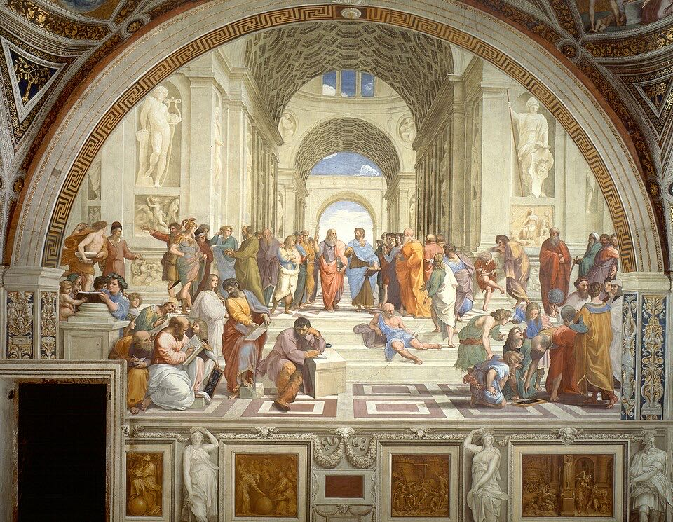

Zer da Filosofia? Filosofiaren inguruko hausnarketa filosofikoa #
Zer da filosofia?
Ondo etorriko zaigu jakitea zertaz ari garen, kontuan hartuta filosofiari lotutako bi ikastaro egingo ditugula: Filosofia, eta Filosofiaren Historia1.
Agian filosofia zer den aldez aurretik badakizu, baina irakasgai honekin behin eta berriz gertatuko zaigun bezala, gure aurrezagutzek argitu baino gehiago ilundu egiten dute haren esanahia. Izan ere, filosofiak modu propioa du bere burua azaltzeko.
Etimologia2. Filosofia zer den azaltzen duten liburu eta bideo gehienak bezala, has gaitezke esaten filosofia greziar jatorriko hitz bat dela, bi hitzez osatua: sophía, jakinduria, eta philia, maitasuna. Hala, filosofia «jakinduriarekiko maitasuna» litzateke; nozio oso poetikoa, baina ez digu laguntzen guztiz zertan ariko garen ulertzen. Jakinduria eskaintzeak ez du Filosofia berezi egiten, beste diziplina askok ere eskaintzen baitigute, hala nola fisikak, filologiak edo biologiak.


Galderak. Aukera hori ere baztertuta, nondik jarrai dezakegu? Norabide egokiago bat lortzeko, hona hemen galdera filosofiko batzuen adibideak. Galderak izateak berak diziplinaren izaeraren berri ematen digu; izan ere, filosofian funtsezkoa da galdera jakin batzuk modu jakin batean egitea.
- Ba al da Jainkorik?
- Nola jakin dezaket ametsetan ari naizen ala ez?
- Nire borondatea librea al da?
- Zer ekintza dira moralki onak edo txarrak?
- Nola sortzen da gizarte justu bat?
- Ba al du bizitzak helbururik?
- Nire gorputza hil ondoren biziraungo duen «arimarik» ba al daukat?
- Zertan datza errealitatea?
- Nola jakin dezaket zerbait egiazkoa den ala ez?
Hala ere, galdera horiek, edo horietako batzuk behintzat, ez dituzte filosofoek bakarrik egiten. Gutxienez beste hiru pertsona motek ere egiten dituzte:
- Haurrek kuriositate handia dute, eta etengabe galdetzen dituzte gauzen zergatiak; oso jarrera filosofikoa da hori. Etengabeko jakin-mina erakusten dute, eta zenbait kasutan behin eta berriz galdetzen dituzte zalantza berberak, itxuraz egokiak diruditen erantzunekin ez baitira pozik gelditzen. Haurrek askotan errepikatzen dute «Eta zergatik?» galdera. Haur horiek helduarora iritsitakoan, ez diote uzten horrelako galderak egiteari dagoeneko behin betiko erantzun onak lortu dituztelako, baizik eta helduaroan beste mota bateko gaiei buruz arduratzen direlako: hala nola lana bilatzeaz, zergak ordaintzeaz edo botoa emateaz.
- Mozkorrak gai garrantzitsu horiei buruzko eztabaida oldarkorretan sartzen dira batzuetan. Latinezko esamoldeak dioen bezala, in vino veritas, ardoaren baitan dago egia3.
- Erlijio-liderrek galdera horiei erantzun jakin batzuk eman ohi dizkiete, beren fedeak eta doktrinak ezartzen dituztenak.
Haurrek ez bezala, filosofoek ez dute inoiz beren jakin-mina alde batera uzten, filosofo izateari utziko liokete eta bestela4. Jakin-mina eta zalantza, galdera filosofikoaren hasiera izateaz gain, jarduera filosofikoa etengabe gidatzen duten bi irizpide dira.
Mozkorrek ez bezala, filosofoek ez dute iragazkirik gabe edo konbentzio sozialak kontuan hartu gabe esaten zer pentsatzen duten, intoxikazio etilikoari esker lotsagabetuta. Jakina, ardoak ez du ematen edaleak aldez aurretik ez duen benetako ezagutzarik. Eta alderantziz: ezagutza hori baduenak, izango du edan gabe ere. Gainera, intoxikazio etilikoak gure adimena eta adierazteko gaitasuna murrizten ditu, eta hori ez da negozio ona filosofoentzat.
Erlijio-liderrek ez bezala, filosofoek erantzun bat eta haren aurkakoa eman diezaiekete aurrerago zerrendatutako galderei, filosofo izateari utzi gabe. Har dezagun lehenengoa adibide gisa: Jainkorik ba al da? Apaiz batek baietz esango du, eta ezingo du esan Jainkorik ez dagoenik apaiz izateari utzi gabe. Azken batean, fededunarentzat Jainkoaren existentzia premisa bat da, ez arrazoiketa bidez lortzen den ondorio bat. Ideia horretatik abiatzen da, eta munduaren eta pentsamenduaren pertzepzioan eragiten du. Dena den, badaude Jainkoaren existentziari buruzko iritzirik ematen ez dutenak, bai filosofo fededunen artean, bai kristautasunaren, judaismoaren eta islamismoaren apologisten artean.
Zerk eragiten du galdera horiek filosofikoak izatea? Zer dute komunean? Alde batetik, galdera horiek subjektiboak direla esan dezakegu, hainbat erantzun zuzen izan baititzake bakoitzak. Batzuek pentsa dezakete heriotza-zigorra justifikatuta dagoela; beste batzuek, berriz, higuingarria dela. Halako zerbait gertatzen da pertsonen gustuekin ere: erabat subjektiboak dira. Adibidez, niri txokolatezko izozkia gustatzen zait, eta zuri limoizkoa; edo gerta daiteke zuri ez gustatzea izozkirik, eta niri izugarri. Baina gai filosofikoak ez dira subjektiboak, haien erantzunak ez daude pertsona bakoitzaren gustuen menpe. Jainkorik bada, edo ez da. Arima dugu, edo ez dugu. Jarrera horietan edo beste batzuetan ados ez egoteak ez du esan nahi edozer gauzak balio duenik. Jarreretako bat okerra da beharbada, nahiz eta orain ez garen gai galdera horiei zuzen eta behin betiko erantzun bat emateko. Erantzun edo jarrera horien alderdi batzuk finkatzen zailak dira, baina hori beste kontu bat da. Agian zenbait galderak ez dute balio duen erantzun bakarra. Adibidez: Nola eratzen da gizarte justu bat? Galdera hori egungo ezagutza soziologikoaren menpe dago (ezagutza hori konplexua eta askotarikoa da berez), baita erantzuna oinarritzeko erabiltzen ditugun balio moralen menpe ere; balio horiek, aldi berean, gure jarrera etikoaren menpe daude. Horrelako galderek aztertu beharreko zirrikitu asko dituzte, faktore askok zeharkatzen dituzte eta oso konplexuak dira. Nolanahi ere, erantzun guztiek ez dute balio bera.
Bestalde, galdera horiek sakontzat jo ditzakegu. Eta hala dira, bai, baina sakontasunaren monopolioa ez du filosofiak. Begira iezaiezu ondorengo adibideei. Unibertsoak etengabe hedatzen jarraituko ote duen galdetzen dute fisikariek. Badakigu unibertsoa zabaltzen ari dela, eta badirudi materia eta energia ez direla ez sortzen ez eta suntsitzen ere. Gai konplexua inondik inora ere! Bestalde, bizitza nondik datorren galdetzen dute biologoek, edota, are gehiago, zer den bizitza.
Galdera horiek, eta zientziak erantzun nahi dituen beste asko, oso sakonak dira, zalantzarik gabe, baina ez dira filosofikoak, nahiz eta hala iruditu. Zertan bereizten dira? Zientziaren galderak funtsean behaketaren eta esperimentazioaren bidez erantzun daitezke; hau da, enpirikoak dira. Oiloek arrautzak jartzen dituzten edo bizirik dauden jakin nahi badugu, oiloak behatu edo horiekin esperimentuak egin behar ditugu. Horrela erantzuten diegu galdera zientifikoei.
Jakina, galdera batzuei ezin zaie enpirikoki erantzun, eta batzuk filosofikoak dira eta beste batzuk ez. Galdera ez-enpirikoen eta, aldi berean, ez-filosofikoen esparru agerikoena matematika eta geometria dira.
Demagun geure buruari galdetzen diogula: «9 zenbakia zenbaki lehena al da?». Lehenengo arazoa da 9 ez dela zenbaki bat, baizik eta zenbaki baten irudikapen bat, nahiz eta biak elkarrekin identifikatu, eta, zenbait kasutan, nahastu. Beharbada, errazago ikusten duzu horrela: IX irudiak kontzeptu bera adierazten du, baina sinbolo erabat desberdinak dira. Biak, 9 eta IX, irudikapenak dira. Koadernoan idazten duzunean, kontzeptu abstraktu eta zail bat irudikatzen ari zara. Adibide honekin ez bazaitut konbentzitu, pentsa ezazu honi buruz: objektu matematikoek, zenbakiek bezala, ikusten duzun errealitatea alde batera utzita ere funtzionatu egiten dute. Horregatik, 9 zenbakia lehena den ala ez galdetzeko, ez duzu zertan kalera irten 9 bat bilatzera eta lehena den ala ez behatu, eta ezin zara laborategi batean sartu eta frogak eta esperimentuak egiten hasi ere. Lehena izatea ala ez izatea, matematikariek aurretik zehaztutako definizio batzuen menpe dago: zenbakiaren eta zenbaki lehenaren5 definizioen menpe.
Geometriarekin saiatuko gara orain. Ondo dakizunez, triangelu bat hiru aldeko poligonoa da. Leku askotan ikus ditzakegu; arriskua adierazten duten trafiko-seinaleetan, esaterako. Baina triangeluek bi dimentsio baino ez dituzte; beraz, trafikoko edozein seinale, ez da triangelu bat, hiru dimentsio baititu, sakonera barne.
Beraz, finkatutako definizioetatik edo axiometatik datozen frogen bidez erantzun daitezkeen galdera ez-enpirikoak ez dira filosofikoak.
Hortaz, izaera filosofikoa duten galderak besterik ez zaizkigu gelditzen: erabakitako definizioetatik edo axiometatik datozen frogen bidez ebatzi ezin diren galdera ez-enpirikoak.
Filosofiaren definizioa. Orain egoera hobean gaude filosofia definitzeko: filosofia behaketaren, esperimentazioaren, definizioen edo axiomen menpe dauden frogen bidez erantzun ezin ditugun galderei zorrotz erantzuteko proiektua da.
Aurretik adierazitako galderek definizio hori betetzen duten egiaztatuko dugu. «Nola eratzen da gizarte justu bat?» galderak ez du eskatzen ez aurreikuspenik6, ez eta azalpenik ere: justifikazio kontua da. Soziologiari edo ekonomiari esker, gizarteek zer egiten duten ikus dezakegu, baina ez batak ez besteak ezingo digute esan gizarteek zer egin beharko luketen. Gehienez ere, helburu jakin batzuk lortzeko edo gizartea nolabait eratzeko modurik onena zein den adierazi ahal izango digute, baina inoiz ez helburu horiek edo antolaketa hori zergatik den beste bat baino hobea.
Gai hori konpontzeko dugun tresna bakarra argudiatzea da; hau da, zerbait frogatzeko edo norbait konbentzitzeko erabiltzen dugun prozesu arrazionala.
Bi eragozpen definizioari. Agian pentsa dezakezu gure erantzunak behaketaren, esperimentazioaren edo kalkuluaren bidez egiaztatu ezin baditugu, edozer gauza dela baliagarria7. Baina ez dela horrela. Argudio onek argudio hobeak ekartzen dituzte, eta argudio horiek gero eta gehiago hurbiltzen gaituzte egiara.
Bestalde, pentsa dezakezu filosofiak ez duela ezer sortzen. 2.700 urte igaro ondoren, oraindik badirudi filosofook gauza berberak eztabaidatzen ari garela… baina ez da zehazki horrela. Gaur egun baliagarriak edo onargarriak ez zaizkigun erantzun asko baztertu ditugu, eta, beraz, akats-kopurua murriztu dugu. Baina oraindik bide amaigabea dugu egiteko.
Gainera, filosofiaren balioa, neurri handi batean, gure balio-irizpidearen araberakoa da. Esate baterako, ondorengo galderaren inguruan erantzun filosofiko bat edo gehiago izatea posible da: Zuretzat garrantzitsua al da jakitea nola jokatu behar duzun, behar bezala jokatu ahal izateko? Erantzuna baiezkoa bada, filosofia baliotsua da. Filosofiaren ekarpena, beraz, esperimentalki erantzun ezin ditugun galderei emandako erantzun zorrotz, arrazional eta arrazoituak sortzea da8.
Filosofiaren tresna bakarrak arrazoia eta argudiatzea izatearen ondorioak. Filosofiaren tresna bakarrak arrazoia eta argudiatzea izateak erantzun eztabaidagarriak sortzen ditu. Erantzun batzuk beste batzuk baino hobeak direla baieztatzen ari naizen arren, denok ez ditugu hobesten erantzun berberak. Gainera, filosofiak, lehen aipatu dugun haurrak bezala, beti galdetzen du zergatik, eta beti gehiago sakontzen saiatzen da; horregatik, erantzunak, askotan, konplexuak izaten dira, eta beste batzuekin alderatzen zailak ere bai. Filosofiari buruzko gure definizioa bera, beste filosofo batzuek (askok) eztabaida dezakete, oso argudio onekin. Hori, etsaitzeko motiboa izan beharrean, gure definizioa hobetzeko eta doitzeko aukera bat da. Hala ere, filosofia zer den jakiteko hausnarketa hau, berez, filosofikoa da, eta gure definizioan sartzen da.
Filosofook etengabe eztabaidatzen dugu dena9. Hemen garrantzitsua da jarrera eta asmo zuzenari eustea; kontua ez da dena ukatzea edo guztiari aurka egitea kapritxoz edo egoskorkeriaz, baizik eta beti arrazoimenaren eta arrazoien esparruan mugitzea.
Filosofatzea zaila da, ezin baititugu egiaztatu gure erantzun eta baieztapenak behaketa eta kalkulu bidez. Horrela, pentsatzea beste erremediorik ez dugu. Denok gara pentsatzeko gai, baina ongi egiteko eta behar bezala aritzeko, ikastea eskatzen du, edozein kirolek eskatzen duen bezala. Ikastaro honetan, lehenbizikorako gutxieneko tresnak ematen saiatuko gara, eta zure esku egongo da bigarrena egitea.
Ekin diezaiogun.
Jakintza filosofikoaren ezaugarriak eta ikusmoldeak
Mitotik logoserako jauzia
Munduaren ikuspegi mitikoa
Mito terminoa maiz erabiltzen dugu kaleko hizkuntzan. Harrigarria bada ere, kontrako bi esanahi ditu. Alde batetik, oso ona edo apartekoa den zerbait deskribatzeko erabiltzen dugu, hala nola: «Messi futbolari mitikoa da! Nola liteke ez ezagutzea?» Bestetik, zerbait gezurra dela esan nahi izaten dugu, hau esaten dugunean bezala: «Anbotoko Mari mito bat da» edo «jaten hasi eta ordubete igaro arte bainatu ezin izatea mito bat da».
Guk esanahi sakonagoa emango diogu, eta gizarte-antropologiaren ekarpenari esker argitzen saiatuko gara.
Mitoaren definizioa. Mitoak jatorri ezezaguneko kontakizunak dira, eta askotan erlijio-sinesmenekin lotutako sinboloz osatzen dira, baina ez beti. Ipuinak eta alegiak ez bezala, istorio sakratuak dira, mundua eta gizadia diren bezalakoak izatera nola iritsi diren azaltzen dutenak. Hortik dator erlijioarekiko balizko lotura.
Mitoak sinboloz betetako istorioak dira, eta ipuinetatik bereiztea ezinbestekoa da. Mitoei buruz ari garenean, ez gara Txanogorritxoren abenturez hitz egiten ari. Istorio sakratuak dira, eta garrantzi handia izan ohi dute, bai kontalariarentzat, bai hartzailearentzat. Ez dira gertaera edo anekdoten kontakizunak; aitzitik, oso kontakizun serioak dira.
Lauri Honko-k mitoak identifikatzeko eta definitzeko lau irizpide ezarri zituen. Honako hauek dira:
- Forma. Mitoak kontatu eta dramatizatu daitezkeen kontakizunak dira.
- Edukia. Mitoen edukia sakratua da, eta naturaz gaindiko izakiekin edo alegiazko izakiekin lotuta dago.
- Funtzioa. Mitoek hainbat funtzio betetzen dituzte. Garrantzitsuenetako bat da munduari, naturari, gizakiari, gizarte-erakundeei eta teknologiari buruzko azalpenak ematea. Beste bat jokabide-eredu izatea da. Hau da, nola jokatu behar dugun, eta zergatik, azaltzen digute.
- Testuingurua. Mitoak estuki lotuta daude errituekin; ez dira denbora-pasak, sinesmen erlijioso edo espiritualen zati baizik. Kontatzean edo antzeztean (antzerki gisa), bizia hartzen dute, eta iraganeko gertaera garrantzitsuen lekuko bihurtzen gaituzte.
Mitoen ezaugarri orokor batzuk:
- Kulturaren igorle nagusiak dira. Mitoen bidez, sinbolo sakratuak eraikitzen dira10.
- Indar kontrolaezinekin izan ohi dute lotura, eta haiei buruzko azalpenak ematen dituzte.
- Istorio sakratuak kontatzen dituzte, naturaz gaindiko izakiei edo heroi boteretsuei buruz (jainkoak izaten dira askotan)11.
- Antzinako garaiei loturiko kontakizunak dira; kondairak ez bezala, garai haietako egunerokotasuneko gaiei buruzkoak12.
- Mito sakratuek gai hauei buruzko azalpenak ematen dituzte:
- Naturaren izaera.
- Gizateriaren jatorria.
- Unibertsoaren jatorria.
- Hil ondorengo bizitza.
- Jainkoak eta izpirituak egotea.
- Heriotzaren, suaren, animalien edota landareen jatorria.
- Zenbait gizarte-erakunderen edo giza ekintzaren jatorria: gerrak, ezkontzak, sakrifizioak, bidegabekeriak, sufrimenduak eta abar. Oro har, gizartea eta mundua diren bezalakoak izatera nola iritsi diren.
Mitoen egia. K.a. VI-V mendeetan, Antzinako Grezian, zalantzan jarri zuten beren egiazkotasuna, eta diskurtso arrazionalaren kontrakotzat jo zituzten. Mitoa alegiazko istoriotzat hartzea ez da gauza berria, ez baitago enpirikoki egiaztatzerik. Hala ere, mitoak baliatzen dituztenek egiazkotzat jotzen dituzte.
Mendebaldeko kulturetan kategoria dikotomikoen bidez ikusten dugu mundua: erreala/irreala, natura/naturaz gaindikoa, edo egia/gezurra. Aitzitik, beste kultura askorentzat, errealitate bakar baten parte dira eguneroko esperientziak, ametsak eta pentsamendu mitikoa, eta elkarri estu lotuta daude. Horregatik dira hain garrantzitsuak mitoak.
Hori dela eta, mitoen garrantzia ez dago lotuta, zientzia ez bezala, errealitateko fenomenoak azaltzeko duen gaitasunari, edo gaitasun faltari. Mitoetan sinesteak munduari buruzko ikuspegi bat ematen digu. Diskurtso intelektualaren eta gizakien arteko harremanen abiapuntu bihurtzen dira.
Horrez gain, zenbait kasutan mitoak aldaezintzat kontsideratu izan dira, baina historian zehar aldatzen joan daitezkeela ere ikusi izan da, horretarako borondate edo asmo kontzienterik egon gabe ere.
Mitoak ez dira naturaren fenomenoen edo zientzia primitiboren baten adierazpen poetiko hutsak. Batzuetan, pentsamenduaren gaixotasun gisa ikusi izan dira, gizarte tradizionaletan bizi direnak gai ez balira bezala pentsamendu abstraktua erabiltzeko eta ulertzeko. Ernst Cassirer filosofo eta soziologoak zioenez, pentsamendu zientifikoak eta mitikoak, biek, lotura zuzena jarri nahi izan dute betidanik gertakarien kausa eta efektuen artean, baina soilik modu sinbolikoan lortu dute, eta modu okerrean.
Claude Lévi-Strauss filosofo eta antropologoak, aldiz, pentsamendu mitikoaren eta zientifikoaren artean ez zegoela funtsezko alderik uste zuen, esperientziaren munduko harremanei buruz hitz egiten dutenean biek erabiltzen baitute logika. Beraz, mitoa ez litzateke errealitate ez-zientifiko edo primitibo baten irudikapena izango: ez dira ezagutza aurrezientifiko mota bat; aitzitik, jarduera zientifikoa eta mitoak bi dimentsio desberdin dira. Azken batean, mitoek giza gogamenaren funtzionamendua islatzen duen barne-logika bat dute. Levi-Straussen egituraketaren arabera, gauzen izaera ez dago gauzen barruan, gauzen artean ezartzen ditugun harremanetan baizik.
Filosofia eta mitoa. Baina zergatik ari gara mitoak lantzen Filosofia irakasgaian?
Alde batetik, mitoek munduari eta gizakiari buruz pentsatzen lagundu digute13. Garrantzi handia izan dute, pentsamendu mitikoa gure gogamenaren parte den neurrian. Mundua interpretatzeko beste modu batzuk sortu baditugu ere, hala nola filosofia eta zientzia, horiek ez dute pentsamendu mitikoa ordezkatu. Pentsamendu mitikoak osatzen du gure pentsamenduaren oinarria, eta filosofiaren eta zientziaren baliabideak gehitu zaizkio horri.
Bestalde, filosofiak pentsamendu mitikoari egin behar izan zion aurre, pentsatzeko modu berriaren ezaugarri bereizgarriak nabarmentzeko (mitoak ordezkatu zituztela nabarmendu nahi izan zuten antzinako filosofoek). Mitoek pentsatzeko modu zaharra irudikatzen zuten, eta filosofiak, aldiz, berria; beraz, baztertu egin behar zen lehenbizikoa.
Denboran zehar, filosofiaren historia aztertu dutenek filosofiaren interpretazio hori mantendu dute. Hala ere, onartu behar dugu lehenengo filosofoetako batzuek mito batzuk erabili zituztela beren pentsamendua azaltzeko, eta mitoaren eta filosofiaren bereizketa ez dela Filosofiako irakasleok batzuetan aurkezten dugun bezain argia, berehalakoa eta kontzientea.
Gaur egun, zenbaiten ustez, zientziak mundua azaltzeko esklusibotasuna edo, behintzat, lehentasuna lortu nahi du. Horretarako, ez da soilik zientziaren beraren merezimenduetan oinarritzen, baizik eta, batzuetan, mundua interpretatzeko beste modu batzuk gaitzesten ditu. Aitzitik, benetako pentsamolde zientifikoa duen pertsonak kontuan hartzen du gizakiaren eta munduaren konplexutasuna, eta onartzen du bizitzari aurre egiteko zientzia baino zerbait gehiago behar dela.
Filosofia sortzeko baldintzak
Filosofia ez zen berehalakoan sortu. Ez dago pertsona edo gizarterik, egun batean munduaren ikuspegi mitikoa, eta hurrengoan arrazionala, espekulatiboa edota filosofikoa duenik.
K.a. VI. mendean, Antzinaroko Greziako kolonietan, filosofiaren sorrera14 ahalbidetu edo erraztu zuten hainbat faktore izan ziren. Bost hauek nabarmentzen dira15:
Pentsamendu abstraktuaren garapena
Begiratu zerrenda honetako elementuei. Horiek guztiek abstrakzioa areagotzen dutela egiaztatuko duzu, eta errealitate zehatzetik urruntzea eta filosofiarako aukerak zabaltzea ekartzen dutela.
Idazkera alfabetikoa. Txinatarrek eta egiptoarrek piktogramen bidez idazten zuten: objektu bat adierazten duten marrazkien bidez. Feniziarrek, ordea, gaur egun ezagutzen ditugun letrak asmatu zituzten. Edo, behintzat, ezagun egin zituzten. Horiei esker, oso erraz idatz daiteke, ahoskatzen duguna islatzen baitute, eta ez, aldiz, objektuaren itxura. Idazteko modu horri esker, edozein ideia kodetu daiteke, eta transmititzen erraza den testu bihurtu. Horrela, gainera, berehalakoa ez den komunikazioa lortzen da. Horri esker, gaur, Platonen testuak irakur ditzakegu (25 mende dituzte), eta haren ideiak eta pentsatzeko modua hobeto uler ditzakegu.
Dirua. Diruaren kontzeptua oso abstrakzio handia da. Trukearen bidez, ditugun objektuak behar ditugun beste batzuekin truka ditzakegu. Baina, adibidez, nik oiloak hazten baditut eta zapatak behar baditut, baina zapata-saltzaileak ez badu oilorik behar, nola lortuko ditut zapatak? Zapatariak zer behar duen jakin behar dut, eta hainbat truke egin behar ditut, azkenean, lortutako hori zapatekin trukatu ahal izateko. Diruaren bidez, ordea, guztiok partekatzen dugun erreferentziazko balio-sistema bat dugu. Horrela, zapatariak prezioa jarriko die zapatei, nik nire oiloak diruaren truke salduko ditut merkatuan, eta diru horrekin zuzenean erosi ahal izango ditut zapatak. Edo gorde eta aurreztu. Edo behar duen lagun bati bidali. Edo… ulertzen da ideia, ezta?
Egutegiak. Negozioetarako oso erabilgarriak dira, denbora modu abstraktuan adieraztea ahalbidetzen baitute. Hauei esker, ilargitan, urtarotan edo urtetan kategorizatu ordez, posible da denbora-unitateetan kategorizatzea. Horrela, kalkuluak eta aurreikuspenak zehaztasun handiagoz egitea lortzen da.
Astronomia. Erabilgarria da nabigatzeko eta kolonia gehiagotara iristeko. Eta egutegiak egiteko.
Matematika. Funtsezkoa da merkataritzako ondasunak eta dirua kudeatzeko. Eta astronomiarako. Eta egutegiak egiteko.
Kosmosaren ideia. Lehen filosofoek, physis-aren filosofoek, kosmosa landu zuten, ondoren ikusiko dugun bezala. Kosmosa den guztia da. Ezin da abstrakzio-maila handiagorik aurkitu. Dagoena, hau da, kosmosa osatzen duen guztia ordena jakin baten arabera dago antolatuta. Beraz, ez dugu kanpoko jainkorik behar haren funtzionamendua azaltzeko.
Logosa
Logosa filosofiako termino garrantzitsuenetariko bat da, eta behin eta berriz agertuko zaigu ikasturtean zehar. Greziera klasikoaren beste termino askorekin gertatzen den bezala, itzulpena ez da erraza, erabilera eta adiera guztietan funtziona dezan. Ezin dugu zuzenean hitz baliokide bakar batekin ordezkatu. Horregatik, eta ez esnobismoagatik, jatorrizkoa mantentzen dugu, eta, batzuetan, erabili ere bai.
Logos kontzeptuak hainbat adiera16 ditu: hitza, hizketa, arrazoiketa, argudiaketa, edo diskurtsoa, besteak beste. Baita adimena, pentsamendua eta zentzua ere. Arrazoia ere bai, bai gizakien arrazoi indibidualari edo arrazoitzeko gaitasunari dagokionean, bai eta kosmosaren arrazoi unibertsalari edo antolaketa arrazionalari dagokionean ere17.
Guri dagokigunez, logosak arrazoian, argudiatzean eta pentsamendu abstraktuan oinarritutako munduaren ikuspegi filosofikoa irudikatzen du. Gogoratu hasieran eman dugun filosofiaren definizioa. Baina zer da pentsamendu abstraktua?
Sagarrak. Agian errazagoa izango da pentsamendu konkretua zer den azaltzea. Demagun hau irakurtzen duzun bitartean sukaldera joan eta hiru sagar hartzen dituzula, eta zure idazmahaiaren gainean jartzen dituzula. Sagar horiek konta ditzakezu, kolorea deskriba dezakezu, horiei buruz hitz egin, eta elkarren artean alderatu. Aztertu ondoren, jan ere egin ditzakezu. Horiek sagar konkretuak dira, hiru sagar jakin, munduan egon litezkeen bilioi bat sagarren artean.
Bihar sagarrak erosi behar dituzula, edo Frantzian oso sagar gozoak dituztela esaten badizut, ez naiz ari eskura edo bistan dituzun sagar konkretuei buruz. Baina nik aipatzen ditudan sagarrak ikusten ez badituzu ere, ulertu duzu sagarraren kontzeptua, esan dudana ezagutzen duzulako. Frantziako sagarrak aipatu ondoren udare baten argazkia erakusten badizut, badakigu gauza desberdinez ari garela. Hala, sagarrei buruz hitz egiten dudanean abstrakzio bat egiten ari naiz. Ez naiz sagar konkretuez ari, berdin zait sagar horiek badiren edo ez diren, ez naiz joango ba ote dauden begiratzera ere. Horiei buruz esaten dudana ulergarria eta erabilgarria da.
Are gehiago. Sagarrei eta udareei buruz hitz egiten ari banaiz, frutei buruz ari naiz, ezta? Azken batean, bai bananek, bai udareek eta bai sagarrek, ezaugarri komunak dituzte. Horregatik dagokie frutaren kontzeptua. Kontzeptu horretan ez dira sartzen mailuak eta hozkailuak. Hala, frutaren kontzeptua udarearena eta sagarrarena baino zabalagoa edo abstraktuagoa dela esan dezakegu, baina ez mailuak sartzeko bezainbeste. Abstrakzio-mailetan gora egin ahala, are urrunago joan gaitezke frutak landareak eta izaki bizidunak direla esanda.
Gogoan izan abstrakzio-maila horretara sagar jakin batetik iritsi garela. Imajinatu, orain, edertasuna, ongia, maitasuna edo gizatasuna bezalako kontzeptuek zer abstraktutasun-maila duten. Gizatasuna adibide hartuta, argi eta garbi ikus dezakegu ez dakigula, eta ezin izango dugula inoiz jakin, zer pertsona konkretuk osatzen duten, ez baititugu inoiz ezagutuko jada izan direnak, edo etorkizunean izango direnak. Eta, hala ere, erraz eta zuzen esan dezakegu gizakiaren ezaugarri komuna dela bi begi izatea. Eragiketa mental hori gure abstrakzio-gaitasunari esker egin dezakegu, eta ez da beharrezkoa gizaki guzti-guztiak ezagutzea. Nahiz eta gizaki bat begi bakarrarekin jaio, hala ere egokia izango da gizakien deskribapena egiteko.
Beste adibide bat: aritmetika. Imajina ditzagun berriro mahai gaineko hiru sagarrak. Kontatzean, hatz bat luzatu dezakegu sagar bakoitzeko, eta «bat, bi eta hiru» esan, ezta? Edo honela idatz genezake:
\[1+1+1=3\]
Kasu honetan 1 sagarra da. Baina 1 horrek sagarrak batzeko eta kontatzeko bakarrik balio al digu? Kasu honetan horretarako erabili dugu, baina zenbaki berak etxeak, pertsonak edo zuhaitzak kontatzeko ere balio digu. Beraz, \(1+1+1=3\) egiteak balio dezake «zuhaitz bat, beste bat eta beste bat hiru direla» adierazteko ere.
\(1+1+1=3\) gisako proposizioek edozein gauza kontatzeko balio digute, adierazpen abstraktuak direlako. Hau da, ez dute gauza konkreturik adierazten. Orain, imajinatu zer abstrakzio-maila izan dezakeen ondorengo proposizioak: \(x+y+z=3\)
Filosofiari aplikatutako abstrakzioa. Pentsamendu abstraktua funtsezkoa da gizakientzat. Hatzarekin seinala dezakegunari buruz soilik hitz egiteko gai izango bagina, nola hitz egingo genuke urrun dauden senide eta lagunei buruz, askatasunari buruz, sentimenduei buruz edo filosofiari buruz?
Matematika da diskurtso abstraktuena, teorema eta formula gehienek ez baitute loturarik munduarekin. Matematikak ez du munduaren beharrik, gogamenarekin soilik egin daiteke. Matematikari batek mundu osoa eta beste dimentsio batzuk deskriba ditzake, paper eta arkatz baten laguntza hutsarekin. Nahi duena.
Pentsamendu abstraktua funtsezkoa da filosofiarako, ez baitu hitz egiten gaur autobusean edo supermerkatuaren ilaran gertatu zaidan anekdotaz; gauza hauetaz baizik18:
- Zertan datza ondo edo zuzen jokatzea?
- Zerk eragiten du koadroak edo musika-piezak ederrak izatea?
- Nola gobernatu behar dugu estatua ahalik eta bidezkoena izan dadin?
- Nola jakin dezakegu zientziak egiazko baieztapenak egiten dituen?
- Zertan datza giza duintasuna?
- Animaliei giza eskubideak aitortu behar al dizkiegu?
Ikus dezakezunez, gai horiek guztiak oso abstraktuak dira.
Mundua ulertzeko modu berria (dagoeneko ez hain berria): Filosofia. Mitoak zer diren, filosofiaren sorreraren baldintzak nola gertatu ziren eta logosa eta pentsamendu abstraktua zertan datzan ulertu ondoren, filosofia definitzea bakarrik gelditzen zaigu. Filosofiaren aitzindari izan ziren miletoar haiek ez ziren konformatu tradizioak eta mitoek gauzen izaerari19 buruz ematen zituzten azalpenekin. Trumoiak Zeusen amorruaren ondorio izatea, edo uztak eta urtaroak Demeterren menpe egoteak ez zuen eragozten honako galdera hau egitea: «zergatik da horrela?» edo «nondik atera dugu azalpen hori?». Erantzuna hauxe baino ezin zen izan: «gure arbasoek hala uste zutelako» edo «jainkoek hala kontatu zigutelako»20.
Filosofo fisikoekin —Miletoko Talesekin eta, bereziki, Miletoko eskolarekin— sortu zen mundua azaltzeko eta interpretatzeko modu berri hori, filosofia deitzen duguna, eta hemen ikasten ari garena. Jada adierazi dugun bezala, ez zen une batetik bestera sortu; izan ere, bere baitan zituen aurreko hamarkadetan ernatutako hainbat hazi. Tradizio kulturalaren eta erlijioaren ordez, ikerketa arrazionala eta argudiaketa ekarri zituen.
Ondorioak berehalakoak izan ziren: premiazkoa zen gauzen izatearen printzipioak eta oinarriak aurkitzea. Nola dago osatua kosmosa edo materia bera? Zer da izatea? Nondik dator ikusi eta ulertzeko gai garen guztia? Kosmosak ba al du hasierarik, ala betidanik egon da? Talesen intuizioak baiezkoa zioen, bazegoela printzipio edo arkhé bat, izatearen oinarrian zegoena. Horrela sortu zen filosofia, gauzen izateari buruzko galdera metafisikoekin.
Filosofiaren adar edo alor tradizionalak
Filosofiak gutxienez 2 608 urteko21 historia du. Imajina dezakezun bezala, denbora-tarte honetan gai ugariz arduratu da, eta hainbat eta hainbat proposamen eta sistema sortu ditu.
Jarraian, gai eta planteamendu horiek biltzen dituzten eremu handienen sailkapen bat duzu. Filosofiaren adar edo alor deituko diegu. Lagungarri izango zaizkizu sailkatzeko eta hobeto ulertzeko. Horietako bakoitzak ezagutza-helburu bat du; hau da, gai multzo jakin bati buruzkoa da.
Metafisika
Filosofia anbizio handiarekin hasi zen, eta inolako konplexurik gabe galdetu zuen honako hau: zer da errealitatea? Zertaz dago osatuta? Zergatik irauten du eta ez da desagertzen? Beti egon al da hor? Errealitatearen izaerari buruzko kezkari eta horren inguruko ikerketa filosofikoari metafisika deitzen diogu.
Badakigu lehen filosofoek22, k.a. VI. mendekoek -zehazkiago esanda, Miletoko eskolakoek-, jada hitz egin zutela naturaren (gauzen) arkhéaz edo printzipioaz, eta oinarriaz. Naturari physis deitu zioten; horregatik, filosofo fisiko gisa ere ezagutzen ditugu. Gaur egun ere, hitz hori bera erabiltzen dugu fisika esaten dugunean, kosmosaren funtzionamendua gobernatzen duten legeen azterketa izaten jarraitzen baitu.
Egungo fisika zientifikoa23 ez bezala, metafisika ez da soilik errealitate materialaz arduratzen, errealitatea zentzu zabalean aztertzen baitu. Hauek dira metafisikan egin ohi diren galdera batzuk:
- Zer da errealitatea?
- Materia erreala da?
- Zer errealitate du pentsamenduak?
- Unibertsoa mugagabea al da? Edo behin betikoa al da?
- Ba al da jainkorik?
- Zergatik dago errealitatea eta ez, aldiz, ezereza?
- Nondik dator erreala dena?
- Denboraren hasierarik existitu al da inoiz?
Ontologia. Ontologia metafisikaren adar bat da, izakia, existentzia eta errealitatea aztertzen dituena. Besteak beste, existitzen diren eta ez diren gauzak, eta beren arteko erlazioak ikertzeaz arduratzen da. Tradizio filosofikoan oso errotuta dagoen bereizketa delako aipatzen dut, baina errealitatearen gaia zehatzago aztertzen dugunean izan ezik, metafisika eta ontologia sinonimo gisa hartuko ditugu. Nahikoa dugu metafisika zer den ondo ulertzen saiatzearekin.
Epistemologia
Epistemologia ezagutzari eta egiari buruzko diskurtso filosofikoa da. Dagoeneko esan dugu filosofiaren tresna bakarrak arrazoimena eta argudioak direla. Filosofook egia ezagutu nahi dugu, edo, behintzat, ahalik eta gehien hurbildu hura ezagutzera. Gure arrazoimena elikatzeko erabiltzen ditugun argudioak faltsuak edo zalantzazkoak badira, ezingo diegu galdera filosofikoei zorrotz erantzun.
Egia eta ezagutza ziurrak eskuratzea hain garrantzitsua bada filosofoentzat, berehala topatuko ditugu hemen ere zailtasunak:
- Zertan datza egia?
- Zer da zerbait ezagutzea?
- Egia unibertsala al da? Ala egia osatugabeak, partzialak, erlatiboak edo pertsonalak baino ezin ditugu lortu?
- Nahikoa al da mundu enpirikoa behatzea ondorio egokiak ateratzeko?
- Zein dira giza ezagutzaren mugak?
- Fidagarria al da gure arrazoimena?
- Nola jakin dezakegu zerbait egia (ala gezurra) den?
- Ba al dago ezagutza unibertsal eta beharrezkorik?
- Ba al dago arrazoimenaren bidez soilik, zentzumenen laguntzarik gabe, eskura daitekeen ezagutzarik?
Logika
Logikak inferentzia zuzenak egiteko modua aztertzen du. Inferentzia premisetatik abiatuta ondorioak ateratzeko prozesua da; beraz, pentsamenduaren azterketa filosofikoa da logika. Pentsamenduak eta argudiaketak (filosofiaren ezinbesteko tresnak) inferentzia eta arrazoibide zuzenak erabili behar dituzte. Filosofoak ideiak aurkitu edo sortuko ditu, eta soilik baliagarriak izango zaizkio ideia horietatik beste batzuk ondorioztatzeko gai bada.
Inferentziak hiru motatakoak izan daitezke:
Dedukzioa: premisa orokorretatik abiatuta, logikoki baliozkoak diren ondorio partikularrak ateratzea. Ondorioaren egia premisen egiek bermatzen dute. Bestela esanda: premisak zuzenak badira eta dedukzioa ere zuzena bada, ondorioa nahitaez beteko da.
Dedukzioarekin ez dugu lortzen premisa orokorrean jada agertzen ez den informazio berririk. Ikus dezagun adibide bat:
- (1. premisa) Gizon guztiak hilkorrak dira.
- (2. premisa) Sokrates gizona da.
- (Ondorioa) Sokrates hilkorra da.
Hona hemen hain formala ez den adibide praktikoago bat: hitzordu bat duzu medikuarekin 10:00etan; badakizu ordu erdi behar duzula hara iristeko; beraz, 9:30ean irten zara etxetik.
Indukzioa: kasu partikularretatik printzipio orokorrak lortzea. Indukzioek ezagutza zabaltzen dute (dedukzioek ez bezala), baina berretsi ahal izateko gertaerei behatu behar zaie.
Ikus dezagun adibide bat:
- Ahate zuriak ikusten ditut.
- Ahate zuriak ikusten ditut.
- Beraz, ahate guztiak zuriak dira.
Nahikoa dugu zuria ez den ahate bat ikustea indukzioa faltsutzat jotzeko.
Ikus dezagun ohikoagoa den beste adibide bat. Oraingo honetan ondorioa probablea da, baina ez nahitaez egiazkoa: jatetxe batean sei lagunetik lauk ogitarteko berdina aukeratzen dutela ikusten duzu. Ogitartekoa ona izango dela espero duzu, beraz. Jakina, haien gustuak eta zureak oso desberdinak izan daitezke; agian kasualitatez aukeratu dute berdina, edo gainerako ogitartekoen osagairen bati alergia izan diezaiokete.
Dena den, indukzio bidezko inferentziak oso erabilgarriak dira zientzian, esaterako.
Abdukzioa. Behaketetan oinarritzen diren hipotesi probableak dira; ustetzat har ditzakegu, beraz. Hau da, ondoriotik bertatik aterako dugu premisa. Dagoeneko aztertu ditugun aurreko bi inferentzia moten aurkakoa da. Ezagutza zabaltzen duten arrazoibideak dira, indukzioak bezala, baina ez dute dedukzioen segurtasunik.
Adibidez, lurruna botatzen ari den katilu bat ikusi baduzu mahaian, mahaikidea laster itzuliko dela pentsa dezakezu. Ikus dezagun beste adibide bat, kasu honetan formalki adierazita:
- Euria ari duenean, belarra busti egiten da.
- Belarra bustita dago.
- Euria egin du.
Badakigu zenbait kasutan belarra ureztatu egiten dutela, eta ez dela euria egiten duenean bakarrik bustitzen. Kasu hauetan, abdukzioa falazia bat izan daiteke, hau da, argudiaketa logikoki ez da zuzena, baina pertsonen pentsatzeko moduan oso ohikoak dira horrelako aieruak, eta, beraz, aztertu egingo ditugu, logika lantzen dugun unitatean.
Hona hemen logikan egiten diren galdera batzuk:
- Zer da falazia bat?
- Zer da koherentzia?
- Zer esan nahi du kontraesanak?
- Egia koherentea al da beti?
- Zer arauk arautzen dute arrazoimena?
- Noiz da sendoa argudio bat?
Orain arte, filosofoek gai teorikoei edo giza pentsamenduarekin lotutakoei buruz dituzten kezkak ikusi ditugu: gauzen izaera nolakoa den (metafisika), errealitatea nola ezagut dezakegun (epistemologia) eta aurreko biei buruz nola pentsa dezakegun (logika).
Dena den, filosofia gai praktikoez edo giza ekintzarekin lotutakoez ere arduratzen da. Hauek dira ohikoenak: filosofia morala eta etika, filosofia politikoa eta estetika.
Filosofia morala eta etika
Lehenengo filosofoak batez ere metafisikaz arduratu ziren. Zalantzarik gabe, gizakiak kosmosaren parte gara, eta gauzen eta objektuen multzoan sartzen gara, metafisikaren esparruan, alegia. Hala ere, gizakiok kezka-iturri dugu nola jokatu beharko genukeen ere. Portaera ona eta ekintza zuzena (bertutetsua) zein den aztertzeaz arduratzen den filosofiaren alor hori etika da.
Sofistek eta Sokratesek aldaketa garrantzitsua eman zioten filosofiari, k.a. V. eta IV. mendeetan. Giza ekintzan jarri zuten arreta, bai indibidualean —etikoa—, bai kolektiboan —politikoa—. Gizarteek eta erlijioek beti arautu dute zer egin behar dugun, eta zer ez. Ekintza batzuk onak eta beste batzuk txarrak izatea zerk eragiten duen arrazoitzen saiatzen da filosofia. Ohiturak eta arauak justifikatzeaz arduratzen da, gizarte-tradiziora eta erlijio-moralera jo gabe.
Antzinaroko greziar filosofo batzuk saiatu ziren ezartzen, alde batetik, zerk egiten duen ekintza bat zuzen edo oker, eta, bestetik, nola bizi bizitza on bat, bizitzea merezi duen bat. Bizitza ona lortzeko jarraitu beharreko portaerari bertute deitu zioten, eta bizitza beteari edo zoriontasunari, eudaimonia. Haien arabera, bertutea etengabe praktikatu beharreko zerbait da; horrek gizaki hobe bihurtzen gaitu. Horrez gainera, filosofia bikaintasunera edo areté-ra eraman behar gaituen bizimodu gisa ikusten zuten, ez ezagutza akademikoen edo berrien multzo gisa.24
Aquí está el texto formateado según las especificaciones:
Horietaz gain, etika honako hauetaz ere arduratzen da: giza portaeraz, erantzukizunaz, askatasunaz eta autonomiaz. Jarraian, etikan egiten diren galdera ezagunetariko batzuk ikus ditzakezu:
- Zein da bizitza betea edo zoriontsua dakarren bizimodua?
- Zertan datza bertutea?
- Zergatik du ekintza batek balio morala?
- Zertan datza erantzukizuna?
- Zer da autonomia morala?
- Zein da ontasun moralaren oinarria?
- Libreak al gara?
Filosofia politikoa
Gizakiak animalia sozialak gara. Beraz, gure ekintzak ingurune sozialetan gertatzen dira eta besteei eragiten diete. Baina ez ditugu bakarrik banakako ekintzak egiten; gizarteari begirakoak ere egiten ditugu, denok bizitza ona lortzeko eta justizia nagusitzeko. Horretaz arduratzen da filosofia politikoa.
Hauek dira filosofia politikoak jorratzen dituen gai garrantzitsuenetariko batzuk: eskubideak, askatasuna, boterea, boterearen zilegitasuna, gobernu motak eta estatuaren izaera; hau da, bizitza publikoarekin, sozialarekin eta taldekakoarekin zerikusia duten gaiak. Filosofia politikoak honelako galderak egiten ditu:
- Nola justifikatzen da botere politikoa?
- Zein da antolaketa politikorik egokiena?
- Zertan datza justizia?
- Noiz da demokratikoa estatu bat?
- Gauza bera al dira autoritatea eta boterea?
- Zein da estatuaren izaera?
Estetika
Gustu subjektiboak eta pertsonalak alde batera utzita, edertasuna modu arrazionalean ikertzeko sortu zen estetika. Galdera nagusia honakoa da: zer da edertasuna? Denborak aurrera egin ahala, artearen esparrura zabaldu zen hausnarketa hori: zer da artea?
Estetikan egin ohi diren galdera batzuk:
- Zer da edertasuna?
- Zein dira balio estetikoak?
- Subjektiboa al da edertasuna?
- Zerk zehazten ditu gustuak?
- Arteak ematen al du ezagutzarik?
- Arteak moralki ona izan behar al du? Arau moral jakin bat ezartzeko helburua izan beharko al luke arteak?
Filosofiaren alor horiek landuko ditugu ikastaro hau osatzen duten unitateetan.
Ikerketa filosofikoaren egungo arloak
Oso ohikoa da filosofo bati zerbait galdetzen diozunean honela erantzutea: «Sokratesek horri buruz honako hau esan zuen…», edo «Aristotelesek ezarri zuen…». Oso garrantzitsua da gure kulturako ideien jatorria ezagutzea, eta, horregatik, filosofia akademikoak –unibertsitateetan praktikatzen denak eta liburu eta aldizkari espezializatuetan argitaratzen denak– filosofiaren beraren historia ikertzen jarraitzen du. Testuak itzultzen dituzte, berriro interpretatu eta eguneratzen dituzte, eta haietan biltzen diren hausnarketak gaur egunera ekartzen dituzte, guk errazago uler ditzagun.
Gainera, aurrerago aipatu ditugun filosofiaren adar guztiek indarrean jarraitzen dute, ideia, ikuspegi eta aurkikuntza berriak iradokiz.
Dena den, filosofiak gaur egun baliagarria izaten jarraitu nahi badu, egungo gaiak, arazoak eta kezkak jorratu beharko ditu, historian zehar landu direnez gainera. Ezinezkoa zaigu, ordea, gai garrantzitsu guztien zerrenda egitea, are gutxiago haiek guztiak ezagutzea. Izan ere, mundua oso handia eta akotarikoa da, filosofo eta pentsalariz beteta dago, eta, beraz, arazo eta auzi ugari daude aztertzeko.
Gure munduan ez da falta esparru problematikorik; ezagunenetariko bat etika da: ez dakigu zer jarduera den zuzena, ona edo desiragarria, banakoarentzat zein taldearentzat. Injustizia soziala eta aberastasunaren banaketa; ordezkaritza politikoa; baliabide naturalen erabilera eta ustiapena neurrigabea; kutsadura eta berotze global antropogenikoa25; giza klonazioa eta manipulazioa, eta hautaketa genetikoa; giza gaitasunen hedapena, teknologiaren eta transhumanismoaren bidez; adimen artifiziala; gure kontzientziaren izaera, eta gure gorputzarekin eta ordenagailuekin duen harremana; albiste faltsuak eta diskurtso publikoaren manipulazioa. Gai eta arazo horiek, eta beste askok, dimentsio etiko argia dute. Ez da filosofoen lana arazo horiek konpontzea, baina arrazoiak, argudioak eta ikuspegi kritikoa eman behar dizkiegu gai horiei guztiei. Gainera, tresna pribilegiatuak ditugu ikerketa-ildoak gidatzeko, arazoak galdera egokiak eginez definitzeko eta erabaki politikoetan eragiteko, irizpide etiko argiak eta garrantzitsuak emanez.
Gizartearen eta teknologiaren garapen azkarrak etengabe eta sakonki aldatzen ditu errealitatea eta hartaz dugun pertzepzioa. Esaterako: guztiok elikatzen gaituen nekazaritza; bizirik eta osasuntsu mantentzen gaituen medikuntza; fisika, unibertso paralelo edo infinituei buruz hitz egiten digun hori; edota errealitate birtuala, lehen soilik imajinatu egiten genituen baina, gaur egun, gure pertzepziotik eta irudimenetik gero eta gertuago sentitzen ditugun munduetara eramaten gaituena.
Aldaketak hain dira handiak, ezen metafisikoek ere ezin baitituzte alde batera utzi fisika teorikoaren azken proposamenak, edo Ikerketa Nuklearreko Europako Erakundeak aurkeztutako azken frogak. Aristotelesek edo Descartesek beren teoria metafisikoak26 proposatu zituztenean, ez genuen egungo aurkikuntza zientifikorik. Ez dago filosofoen esku esperimentuak egitea, baina haien emaitzak ezagutu eta hausnarketa filosofikora eraman behar ditugu: zer ondorio izango lituzke gizakientzat unibertso paraleloak daudela frogatzeak? Ezin dugu gogoetarik egin, ebidentzia zientifiko berriak alde batera utzita.
Adimen artifizialak (AA) zuzenean eta pertsonalki eragiten digu, ez bakarrik ordenagailuek gure pentsatzeko gaitasuna lortuko dutela dirudielako, baizik eta, horri esker, kontziente izatera irits litezkeelako. Eta, hala balitz, gizakiak balira bezala tratatu beharko genituzke, eta Giza Eskubideen Aldarrikapen Unibertsalean sartu? Geuk baino azkarrago eta hobeto pentsatzen duten eta, gainera, okertzen ez diren makinen esku utzi beharko genituzke erabaki tekniko eta politikoak? Filosofoen lana ez da adimen artifiziala garatzea, nahiz eta nolabaiteko inplikazioak izan ditzaketen zeregin horretan; baizik eta, besteak beste, gogoeta egitea adimena zertan datzan, gizateria zertan datzan edota AAren garapenari zer-nolako mugak ezarri behar dizkiogun. Kontzientziari buruzko galdera ez da mugatzen gainerako animaliek kontzientzia duten ala ez jakitera, baizik eta guri ere eragiten digu: zer da kontzientzia?
Biologiak, etologiak eta neurologiak animalien nerbio-sistemaren alderdi batzuk eskaintzen dizkigute, eta pentsarazten digute ez ote dauden gizakiarengandik orain arte uste genuena baino hurbilago. Nahiz eta hizkera artikulatua erabiltzeko gaitasunik ez izan animaliek, beren bizitza errespetatu behar al dugu, mina sentitzeko gai direla argudiatuz? Animaliak sufritzeko, sentitzeko edo pentsatzeko gaitasuna zertan datzan erabakitzea zientziaren kontua da. Hausnarketa filosofikorako oso garrantzitsua da aurkikuntza horiek iradokitzen dutena aztertzea.
Bestalde, gure garunaren funtzionamenduari eta erabakiak hartzeko moduari buruz neurologiak egindako aurkikuntzek iradokitzen dute, agian, erabaki kontzientetzat hartzen duguna gure nerbio-sistemak dagoeneko hartu dituen «erabakien» kontzientzia hartzea baino ez dela. Hala balitz, benetan libreak al gara?
Ezagutza zientifikoan eta haren aplikazio teknologikoetan egindako aurrerapenetatik sortzen diren gaien eta arazoen zerrenda osatzen jarrai genezake, baina uste dut dagoeneko konbentzitu zaitugula: filosofiak gaur egungo bizitzaren arlo guztietan, bai gizartearenetan, bai norbanakoarenetan, ekarpen handia egin dezake.
Filosofiaren erabilgarritasuna. XXI. mendeko erronken inguruan filosofatzeak duen garrantzia
Filosofia asko aldatu da historian zehar. Ez da gauza bera Platonen garaiko gizartean, Antzinaroko Grezian, Europan edo XXI. mendeko munduan hausnartzea. Ezagutza zientifikoak eta teknikoak oso desberdinak dira; orain askoz gehiago dakigu naturen, gizakiaren eta gizartearen funtzionatzeko moduari buruz; hasierako garaietan imajinatzeko gai ere ez ziren. Gizarte-garapena ere ikaragarria izan da; egungo bizimodua, ohiturak eta gobernu moduak filosofia sortu zeneko gizartearen oso bestelakoak dira.
Ezagutza asko espezializatu egin dira, jakintzaren metaketak eta herritarrek gero eta eskubide gehiago lortzeak eragin dituzten aldaketen ondorioz. Asko dago, ordea, oraindik diziplina bakoitzean ezagutzeko eta ikertzeko; horregatik, jakintzaren adar zehatzagoak sortzen dira etengabe.
XVII. mendeko Iraultza Zientifikoan bereizi ziren filosofiatik natura-zientziak, eta psikologia, berriz, XIX. mendean. Hala, natura, errealitatea eta giza gogamena ikastea beste diziplina batzuen esku dago batez ere, eta filosofiaren espazioa etikara, politikara, logikara eta estetikara mugatzen ari dela dirudi. Jakina, filosofiak ekarpen handia egin behar dio oraindik gai horiei buruzko diskurtso arrazionalari, ikerketan protagonismoa galdu badu ere.
Aldaketa eta berrikuntza horiek gorabehera, giza izaerak berbera izaten jarraitzen du, eta begirada arrazional, abstraktu eta kritiko baten beharra lehen bezain beharrezkoa da. Horixe da filosofiak egin zuen ekarpenik hoberena, gaur egun ere egiten jarrai dezakeena eta egin behar duena. Are gehiago gure bizitza inoiz baino zailagoa den garai honetan; gure arreta estimulatuegia eta sakabanatuegia dagoen honetan, alegia.
Filosofiak begirada holistikoa27 eta erradikala du. Hau da, xehetasunei begiratu behar badie ere, haren ikuspegiak orokorra dena hartzen du, errealitate osoa. Zoom kontu bat da. Ezagutzaren espezializazioak eta daukagun aukera-aniztasun ikaragarriak zooma estutzen digute, ordea. Horrek, askotan, perspektiba orokorra galtzera garamatza.
Mediku batek, adibidez, ez du astirik, bizitza osoan, komunitate zientifikoak zientziari buruz dakiena ikasteko. Medikuntza osoa menderatzeko astirik ere ez lioke emango. Beraz, medikuak espezializatu egin behar du gero eta organo, patologia edo prozesu zehatzagoetan eta txikiagoetan, eta horrek nahitaez dakar inguruko diziplinen ezagutza galtzea.
Gu geu ere, geure bizitzan, askotan xehetasunetan murgiltzen gara, eta benetan axola duenaren eta bizitza onaren ikuspegi orokorra galtzen dugu. Gure arreta lortzeko lehiatzen diren pantailen, pertsonen eta arazoen kopurua amaigabea da, eta arreta galtzeko arrisku handia dugu.
Filosofiaren begirada holistikoa dela-eta erradikala ere badela nioen. Filosofia ez da erradikala muturrekoa, dogmatikoa, ideologikoa edo integrista delako. Guztiz kontrakoa! Erradikala da, gauzen erro edo sustraietara joaten delako, edo, behintzat, hala nahi duelako. Gure errealitate pertsonal, berehalako, subjektibo eta partikularrari soilik erreparatzen diogunean, gure ikuspegia desitxuratzen dugu, eta mundutik urruntzen gara, baita gainerako pertsonengandik ere. Guri zuzenean eragiten diguten arazoak soilik aztertzen ditugunean, gure begirada oso laburra da. Gauza bera gertatzen da talde politiko, kultural edo erlijioso batekin gehiegi identifikatzen garenean ere: arriskua dugu errealitatearen begirada mugatuegia hartzeko. Hori dela eta, filosofiak harago joan nahi du beti, gugandik (gizaki garen aldetik) abiatuz, baina gizateriari eta errealitateari begiratuz.
Horrek ez du esan nahi ezin denik egoera zehatzei buruz filosofatu; egin daiteke, baina betiere hausnarketa denei helarazteko asmoz eta arazoen muineraino iritsiz, arazoak sakon aztertuz, alegia. Egoera edota arazo indibidualak aztertzean, ohartzen gara gizateria osoarekin partekatzen ditugula. Beldurra, antsietatea, ziurgabetasuna eta errua pertsona eta egoera jakin batzuen ondorioz ager daitezke gugan, baina denok ditugu sentimendu horiek. Nire zirkunstantziak zehatzak izango dira, baina, denek bezala, nik ere gida bat behar dut bizitza zuzentzeko: balio eta arau batzuk behar ditut. Agian sentimendu eta balio horiek besteengan ere badaudela ikusi orduko, nire kideekin munduan egoteko eta izateko modu bat partekatzen dudala ohartuko naiz.
Arrazoimena eta arrazoiak baloratzea. Gaur egun bizi garen mundu teknologiko honetan, badirudi, zientziak, teknologiak eta arrazoiak gure bizitzako alderdi guztiak hartzen eta baldintzatzen dituztela. Filosofia arrazoimenaren erabilera zuzenaz eta egokiaz arduratzen da. Pentsatzeko modu egokiarekin batera —nola pentsatzen dugu?—, zergatiak —arrazoiak eta justifikazioak— eta zertarakoak —helburuak eta xedeak— ere planteatzen dizkigu. Arrazoimenak, ordea, bere buruari buruz ere hausnartu behar du, egin ditzakeen akatsak ekiditeko. Izan ere, askotan, gaizki ulertutako arrazoi baten izenean, hanka-sartze asko egiten dira.
Arrazoimenaren gehiegikeria edo desbideratzeak ezin gaitu zentzugabekeriara edo emozio hutsera eraman; ez batak ez besteak ez dute beren burua aztertzeko eta helburuak finkatzeko gaitasunik. Emozioak gizaki egiten gaituen horren funtsezko dimentsio bat dira, baina emozioaren bizipen subjektibo hutsa, arrazoi faltsua bezain arriskutsua edo arriskutsuagoa izan daiteke. Filosofiak gure dimentsio guztien neurri egokia aurkitzen lagundu diezaguke, gure existentzia orekatuaz gozatu ahal izateko.
Emozionalak izateaz gain, gizakiak animalia sozialak gara. Hau da, taldean eta gizartean bizi gara. Gure arteko interakzioek pentsamendua eta ekintzak osatzen laguntzen digute. Beste batzuekin batera bizi garelako lortzen dugu gizaki bezala garatzea. Filosofiak lagundu egin diezaguke identitarismoen eta ideologiaren gehiegikeriei aurre egiten.
Zientziari begirada bat. Zientzia gizateriaren tresna handienetariko eta onenetariko bat da, gizakiaren eta unibertsoaren inguruko ezagutza baliotsua ematen baitugu. Zoritxarrez, eragozpen handi bat du: interesatzen zaigun guztia ezin da ikertu metodo zientifikoaren bidez. Dena ez da behagarria. Zientziak ezin digu esan heriotzaren ondoren bizitzarik ba ote dagoen, adibidez.
Gai horiek funtsezkoak dira guretzat, baina ematen dizkiegun erantzunak ez dira zientifikoak, noski. Filosofia ia hasieratik saiatu da gure bizitzaren zentzuari eta egitekoari buruzko erantzun serio eta sendoak ematen, eta gaur egun ere hala egiten jarraitzen du. Horretarako, azken aurkikuntza zientifikoetatik elikatzen da, eta giza esperientziaren beste arlo batzuez ere baliatzen da, hala nola psikologiaz edo arteaz.
Gainera, zientziak iker ditzakeen gauza guztietatik, zeinek izan beharko lukete lehentasuna? Zer finantzatu eta ikertu behar dugu lehenago: malariaren aurkako txertoa, edota aberatsek beren gorputzak izozteko modua? Erabakia ezin da hartu zientziaren ikuspegitik, etikarenetik baizik.
Pentsamendu kritikoa. Pentsamendu kritikoa ezin da trebetasun gisa irakatsi. Izan ere, kritikoki pentsatzeko, ezinbesteko baldintza da gai jakin bati buruzko ezagutza sakona izatea. Zerbaiti buruz asko eta ondo dakigunean, horri buruz kritikoki pentsa dezakegu; hau da, kontziente izango gara zer geratzen zaigun ezagutzeko, eta gai horri buruzko informazio berria arrazoizkoa eta onargarria den ala ez jakingo dugu.
Jar dezagun adibide bat. Nik ez dakit ezer mekanika kuantikoari buruz. Nola jakingo dut arlo horretako baieztapen bat egiazkoa den? Mekanika kuantikoari buruz asko ikasita. Ekuazio matematiko konplexuak ulertzeko gaitasunik ere ez badut, ezinezkoa izango zait horrelako baieztapen baten egokitasuna edo egia baloratzea. Horregatik, ospe handiko Ekonomiako Nobel Sariek medikuntzari buruzko astakeriak esaten dituzte batzuetan, edota beren ezagutza-eremutik kanpo dauden bestelako gaiekin korapilatu egiten dira.
Imajinatu bideojokoetan, futbolean edo zineman aditua zarela. Norbaitek zerbait esaten badu ondo ezagutzen dituzun arlo horiei buruz, gai izango zinateke honelako zerbait esateko: «hau ez zait egokia iruditzen», «gai honetan ziria sartzen saiatzen ari dira» edo «horrek ez du zentzurik…».
Oro har, filosofiak benetako ezagutzari buruzko irizpideak eta «higiene intelektualaren» jarraibideak eman diezazkiguke. Nahiago baduzu, beste era batera esanda, «pentsamendu-jardunbide egokiak». Hori bai, horiek erabili ahal izateko eta eraginkorrak izateko, kritikoki aztertzeko, beharrezkoa da gai bat sakon ezagutzea.
Dimentsio etikoa. Filosofiaren adar garrantzitsuenetariko bat da etika. Funtsezkoa da oraindik ere. Zalantzarik gabe, erlijioek eta zuzenbideak ere gai etikoak aztertzen dituzte, baina, hurrengo atalean ikusiko dugunez, oso abiapuntu, irizpide eta baliabide desberdinekin lantzen dituzte.
Jokabide on edo zuzenari buruz hausnartzeko diziplinarik onena filosofia da: filosofiak aztertzen ditu zeintzuk diren balioak eta zeintzuk ez, edota nola lor dezakegun bizitza on bat, benetan bizitzea merezi duena. Zalantzarik gabe, medikuntzaren, psikologiaren eta beste diziplina zientifiko batzuen ekarpenetan oinarritu beharko dugu, baina ikuspegi orokorra eta dimentsio etikoa filosofiak ematen dizkio batez ere.
Bizi-filosofiak. Filosofiaren erronketako bat honakoa da: filosofoek historian zehar pentsatu dutenari buruzko ezagutza eruditutik harago joatea, edota errealitatearen alderdi oso zehatzei buruzko amaierarik gabeko eztabaida antzuak gainditzea. Izan ere, baliteke zuk zeuk ere honako hau planteatzea: «ados, oso ondo, baina filosofoek esaten duten horrek guztiak nola eragiten dit niri? Zertarako balio dit?». Ez zaizu arrazoirik falta. Hor sartzen dira bizi-filosofiak. Filosofiaren alderdi praktikoa dira. Munduaren eta gizakiaren ikuspegi ahalik eta argiena, sakonena eta doituena lortzea dute helburu, ondoren justiziari buruzko ideia zuzena izateko, edota egia zer den jakiteko; hau da, nire bizitzan aplikatzeko. Kontua da geure buruari «bizitzarako mapa» bat ematea, arrazoimenean eta arrazoietan oinarrituta, ohiturari, superstizioari edo erlijioari kontrajarrita.
Denbora luzean filosofiaren historia erudituen kontua izan bada ere, azken hamarkadetan bizi-filosofiak (estoizismoa eta epikureismoa) berpiztu egin dira. Horiek bizitza ikusteko modu bat ematen digute, dogmatikoak eta akritikoak izateko joera duten zenbait kultura-ohituraren menpe egon ez gaitezen.
Norbera ulertzea eta eraldatzea. Filosofiak zeure burua ulertzen lagun diezazuke. Batez ere, bizi-filosofiek. Gainera, neurozientziaren eta psikologiaren ekarpenak kontuan hartzen baditu, oso baliagarria izan daiteke zure burua hobeto ulertzen laguntzeko. Are gehiago, filosofia bizitzaren zentzuaz, gure existentziaren helburuaz eta jokamolde onaz arduratzen da. Ezin diogu gehiago eskatu!
Filosofiak gizartea eraldatzeko ahalmena du. Filosofiak ez ditu gizabanakoak, zu barne, modu isolatuan lantzen. Gizaki sozialak gara, eta bizi ditugun gertaera historikoek eragin handia dute gugan. Har ditzagun berriz ere justizia, berdintasuna, zentzua eta helburua bezalako kontzeptuak, eta aplika ditzagun gizarte osoan, bizitza publikoa kudeatzeko eta gobernatzeko moduan. Filosofiak gizarte-helburu hobeak ezartzen, gobernu legitimoak sortzen eta errealitate soziala kritikatzen lagundu diezaguke, errealitate horrek giza duintasuna bermatzen ez duen kasuetan.
Filosofia, jakintzaren eta giza jardueraren beste esparru batzuekin lotuta
Filosofia eta zientzia
Filosofiaren sorrera-garaian, «zertaz dago egina errealitatea?» edo «zein da gauzen izaera?» gisako galderak egiten zituzten filosofoek; gaur egun, batez ere fisikoei dagozkien galderak.
Lehenengo filosofoetariko asko matematikan, aritmetikan edota geometrian adituak ziren, eta haietako batzuek errealitatearen egitura matematikoa proposatu zuten.
Historiako lehen filosofoak, Miletoko Talesek (k.a. 624-546), triangeluen propietateekin lotuta dagoen teorema proposatu zuen, Talesen teorema deritzona. Samosko Pitagorasen arabera, errealitate oro zenbakiz osatuta zegoen. Musika-noten arteko erlazio matematikoak aurkitu zituen, eta bere izena daraman teorema proposatu zuen. Platonek honako testu hau jarri zuen, Akademiaren –bere eskola filosofikoaren– sarrerako atean: «Ez dadila geometriarik ez dakien inor sartu».
Hala, filosofiaren jatorria matematikari eta fisikari lotuta dago ezinbestean. Dena den, gaur zientzia deitzen diogun hori XVI. mendeko Iraultza Zientifikoan sortu zen. Garai hartan bereizi ziren natura-zientziak filosofia naturaletik, unibertsoaren azterketa deitzen zitzaion horretatik, alegia (zehatzago esanda, astronomiatik eta fisikatik).
Metodo zientifikoa da ezagutza zientifikoa sortzen duen tresna. Honako hauek ditu oinarrian: arrazoimena, behaketa enpirikoa, hipotesiak eta esperimentuak, besteak beste. Francis Bacon eta René Descartes filosofoek eta zientzialariek bultzatu zuten.
Metodo honek kalitate handiko ezagutza sortzen du, baina esperimentalki behatu eta egiazta ditzakegun gauzetara mugatuta dago. Esan dugunez, giza existentziak metodo zientifikoaren aukerak gainditzen dituzten dimentsioak eta zirkunstantziak ditu. Badakigu zientziak lan bikaina egiten duela errealitatea deskribatzeko, baina ezin digu esan nolakoa izan behar duen. Hau da, zientziak planeten mugimendua eta gizakien portaera deskriba ditzake, baina ezin digu esan nola jokatu behar dugun.
Epistemologiak ezagutza zer den hausnartzen du, eta iritzitik eta sinesmenetik bereizten du. Gainera, egia eta egiazko ezagutza zertan datzan definitzen saiatzen da, eta jarduera zientifikoak izan ditzakeen akatsen inguruan hausnartzen du. Filosofia baliagarria izan daiteke, beraz, ahalegin zientifikoa, irizpide etikoak lagun, bideratzeko.
Baina filosofiak ere ahalegina egin behar du ekarpen zientifiko berrienak aktiboki ezagutzeko. Gaur egun, ezin dugu metafisika egin mekanika kuantikoa eta erlatibitatea ezagutu gabe. Ezin dugu giza izaerari buruz hitz egin, neurozientziaren eta psikologiaren aurrerapenak ezagutu gabe. Ezin dugu filosofia politikoa egin, zuzenbidearen, zientzia politikoaren, soziologiaren eta antropologiaren ekarpenak ezagutu gabe.
Filosofiak arrazionalki eta zorroztasunez landu nahi baditu gizateriaren galdera garrantzitsuenak, ezagutza zientifiko berri eta sendoenean oinarritu behar du, eta, aldi berean, ezagutza zientifiko hori bera zertan datzan zalantzan jarri eta berrikusi egin behar du.
Filosofia eta erlijioa
Filosofiak eta erlijioak hainbat ezaugarri partekatzen dituzte, baina beren arteko harremana oso konplexua da. Biak munduaren ikuspegi globala ematen saiatzen dira. Besteak beste: biak saiatzen dira azaltzen errealitatea zertan datzan, zein duen oinarria eta zein jatorria; gizakiaren dimentsioaz arduratzen dira, eta zer eta nolakoak garen esaten digute; biek aztertzen dute zer ekintza diren onak, eta zein saihestu behar ditugun; gizartea nola antolatu behar dugun proposatzen dute.
Ulergarria da, zenbait egoeratan, gauza bat eta bera iruditzea, are gehiago filosofo handi asko fededunak izan badira, edo jainkoaren existentziaren eta izatearen froga filosofikoak landu badituzte.
Aitzitik, lehen filosofoek unibertsoari eta errealitateari buruz hausnartzen saiatu zirenean sortu zen filosofia, munduko azalpen mitologiko eta erlijiosoetatik bereizita. Pentsaera mitikodun milurteko batzuen ondoren, jakina; filosofia ez zen bat-batean sortu. Lehen urteetan, filosofia ez zen behar hainbat garatu, ez behintzat erlijio-azalpenak guztiz alboratzeko adina. Baina momenturen batean, esplizituki, filosofiak bere lana arrazoiaren mende jarri zuen, eta baztertu egin zituen errebelazioa, tradizioa eta autoritatea.
Hortxe dago, hain zuzen ere, erlijioaren eta filosofiaren arteko desberdintasun nabariena: erlijioaren ideiak errebelazioan, tradizioan edo autoritatean oinarritzen dira, eta filosofiak, berriz, naturaz gaindiko kausak eta konbentzio tradizionalak baztertzen ditu. Beraz, pentsamendu filosofikoan ez dago lekurik bekatu, erru edo infernuarentzat28.
Bestalde, sinestunak ez diren filosofoek jainkoari edo jainkotasunari buruz hitz egiten dutenean, ez dute izaten buruan fededunek duten kontzeptu bera. Printzipio absolutua izan ohi da, baina inpertsonala. Beste era batera esanda: historian zehar, filosofo askok aldarrikatu dute existitzen den guztiaren lehen kausa bat dagoela, edo naturaren ordenan adimen antolatzaile bat dagoela. Baina horrek ez du esan nahi jainko batek superboteredun pertsona gisa jarduten duenik edo mirariak egiten dituenik, haserretzen denik, pozten denik, zigortzen duenik. Filosofoen jainkoak filosofoek arrazionalki defenda dezaketenera mugatu behar du. Aitzitik, erlijio bateko jainkoa fededunei bururatzen zaien modukoa izan daiteke, inolako mugarik eta koherentziarik gabe.
Teologiak filosofiaren eta erlijioaren artean du lekua, baina, filosofiak ez bezala, premisa gisa du jainko bat existitzen dela: jainko jakin bat, ezaugarri jakin batzuk dituena. Kristautasunaren kasuan, errebelazioak ezartzen ditu ezaugarri horiek.
Filosofia eta zuzenbidea
Dagokion unitatean ikusiko dugun bezala, etikak jokabide ona edo zuzena, eta txarra edo okerra jorratzen ditu. Justiziari buruz ere hausnartzen du.
Filosofiaren beste edozein arlo bezala, etika arrazoimenean oinarritzen da, eta ekintza bat ona edo txarra bihurtzen duten irizpideak eta baldintzak ezartzea du helburu. Hala, filosofo bati galdetzen badiogu zergatik dagoen gaizki gezurra esatea, horri buruzko argudioak emango dizkigu: engainu bat dakarrelako, egia onura pertsonala baino garrantzitsuagoa delako, ustekabeko ondorioak izan ditzakeelako…
Filosofiak ezin ditu ekintza onak, positiboak edo onuragarriak saritu, ezta ekintza txarrak, negatiboak edo kaltegarriak zigortu ere. Filosofoaren argudioek konbentzitzen bagaituzte eta modu arrazionalean jardun nahi badugu, hala egingo dugu. Ez bagaituzte konbentzitzen, edota ustezko onura pertsonala nahiago badugu filosofoaren aholkua baino, filosofoak ezin izango du ezer egin guk nahi bezala jardutea eragozteko.
Bestalde, zuzenbideak egin behar ez ditugun ekintzen zerrenda ematen digu —debekuak, delituak—, bai eta egin behar ditugun gauzena ere —preskripzioak edo betebeharrak—, lege gisa adierazita. Legeekin bat etorri ala ez, legeak urratzen harrapatzen bagaituzte —lapurtzen edo zergarik ez ordaintzen—, zuzenbideak zigortzeko baliabideak ditu: isunak jartzea, atxilotzea, gizartearentzako zerbitzuak eginaraztea…
Horrela, zuzenbideak eta etikak justiziaren, ekintza onen eta betebehar zibikoen esparrua partekatzen dute, baina oinarri desberdina dute —batak legeak, besteak irizpide etikoak—, eta aplikatzeko modua ere desberdina —batak zigorra, besteak konbentzimendua—.
Bi diziplinek gaia partekatzen dutenez, filosofiak gogoeta egin dezake eta egin behar du zuzenbideari buruz. Hortik dator zuzenbidearen filosofia. Nola sortu lege legitimoak eta bidezkoak? Zer arautu beharko litzateke eta zer ez, eta nola? Legeak naturalak ala artifizialak dira? Nola tratatu behar ditu gizarte batek bere gutxiengoak? Galderak amaiezinak dira.
Filosofia eta psikologia
Filosofia bera bezain zaharra da pentsamenduari buruzko azterketa eta hausnarketa. Filosofoak beti izan ditu kezka-iturri: errealitatea nola hautematen dugun, gure ideien eta errealitatearen artean zer harreman dagoen, nola pentsa dezakegun zuzen, giza izaera jakin bat ba ote dagoen edo egiten dugun guztia ikasitakoaren emaitza den, arima dugun edo ez, emozioen jatorria zein den, bizitza on bat nola bizi dezakegun, edota buru-nahasmenduen eta errealitatearen arteko harremana zein den, besteak beste.
XIX. mendean, psikologiaren gai horiek eta beste batzuk aztertzen hasi ziren, espekulazio arrazionaletik harago, modu enpiriko eta sistematikoan, hau da, zientifikoan. Psikologia zientzia bihurtu izanak izugarri lagundu du giza gogamena ulertzen, eta terapia eraginkorrak sortzea ere ekarri du. Baina, ikusi dugunez, beste zientzia batzuekin gertatzen den bezala, geure burua ezagutzeko ez da aski nola funtzionatzen duen deskribatzea, eta horrek jokabidearekin duen erlazioa aztertzea. Psikologiak, oraingoz behintzat, ezin die erantzun bizitzaren zentzuari, giza gogamenaren izaerari eta horren guztiaren inplikazioei buruzko galderei, eta, beraz, filosofiak jarraitzen du galderak horiek planteatzen.
Filosofia eta artea
Artistek artelanak sortzen dituzte (musika, pintura, eskultura, poesia, antzerkia, zinema), eta, zalantzarik gabe, askok gogoeta egiten dute arteak baliagarria, politikoa, morala, edota ederra, ala kontrakoa, izan behar ote duen. Artistak edo arte-kritikariak, galdera horiek egiten dituztenean, ez dira artea egiten ari, artearen filosofia baizik. Artearen oinarriei, helburuei, izaerari eta erabilgarritasunari buruzko galderak egiten dituzte. Arteari buruzko hausnarketa arrazional, zorrotz eta sakon hori eta giza existentziaren gainerako dimentsioekin duen harremana aztertzea –lehenago ikusi dugunez– filosofiaren adar bat da, estetika deritzoguna, alegia.
Hala, estetika ez da teknika piktorikoez, perspektibez edo eskala musikalez arduratzen –hau da, artelan bat egiteko moduez–, baizik eta definizioaz (zer den eta zer ez den artea), zergatiaz, balioaz, eta giza bizitzan betetzen duen funtzioaz.
Arteak, neurri batean, gizarteari egiten dion ekarpen bera egin diezaioke filosofiari ere: edertasuna, esperientzia estetikoa, errealitateari buruzko begirada alternatiboak, salaketa soziala, etab.
Filosofoaren oinarrizko metodoak eta tresnak
Metodo filosofikoak
Guztiok ezagutzen ditugu Matematika ikasgaian problemak ebazteko erabiltzen ditugun aritmetika eta formulak. Taula periodikoa erabili dugu Kimika klasean molekulak ulertzeko. Euskaran testu-iruzkinak ere egin ditugu, garai jakin bateko literaturari buruz ditugun ezagutzak eta poema bat aztertzeko baliabide literarioak konbinatuz. Zalantzarik gabe, ingelesezko aditz irregularren zerrendak ere ikasi ditugu, ezta?
Baina nola egiten da filosofia? Zertan datza jarduera filosofikoa? Gogoratu filosofia honela definitu dugula: «behaketaren, esperimentazioaren, definizioen edo axiomen bidezko frogekin erantzun ezin ditugun galderei zorrotz erantzuteko proiektua». Matematikariek, kimikariek eta hizkuntzalariek, hain zuzen ere, justu bestelako galderei erantzuten diete, hau da, behaketaren, esperimentazioaren edo axiomen bidez erantzun ditzakegun galderei.
Beraz, oinarrian, filosofo batek eseri29 eta pentsatu egiten du. Baina, batez ere, argudioak ematen ditu. Hau da, ideiak modu koherentean egituratzen ditu, modu metodikoan, eta arrazoiketa baliatzen du horretarako.
Historian zehar, filosofiak hainbat metodo erabili ditu argudioak eta ideiak egituratzeko. Metodo bat gauzak egiteko modu bat da, helburu bat lortzeko sistematikoki erabiltzen diren erabaki edo ekintzen multzoa. Jarraian, horietako batzuk ikusiko ditugu. Kontuan izan metodo batzuek, fenomenologikoak adibidez, filosofian korronteak ere sortu dituztela, baina beste filosofo batzuek hainbat metodo erabili dituztela beren ideiak garatzeko. Nolanahi ere, kontzeptu horietako batzuk zeureganatzen hasi behar duzu; izan ere, aurrerago ere azalduko dira ikastaroan, eta behar ditugun heinean joango gara garatzen.
Eszeptizismo metodologikoa edo zalantza kartesiarra. Descartes erabat nahastuta sentitzen zen bere ikasketen amaieran, irakasleek era guztietako ideiak eta horien kontrakoak irakatsi zizkiotelako. Benetako ezagutza aurkitzea zen haren helburu nagusia. Baina nola jakin zein den benetako ezagutza eta zein ez? Horretarako, bere metodoa sortu zuen: ordura arte lortu zituen ezagutza guztiak zalantzan jartzen hasi zen, eta egiazkoa izateko bermerik ez zuen proposamen edo baieztapen oro baztertu zuen. Beraz, Descartes eszeptiko erradikala izan zen. Haren metodoaren jatorria zalantzazko guztia zalantzan jartzea izan zen, sistematikoki. Metodo honen arazoa, ordea, honakoa da: inolako egoeratan zalantzarik sortzen ez duten gauzen kopurua oso txikia dela. Bada bat, ordea, oso nabaria, berak proposatu eta oso ezagun egin zena: «pentsatzen dut, beraz banaiz». Benetan ziurtasun osoz esan dezakegun egia da, nahiz eta ez digun askorik esaten gure izateko moduari buruz, eta ez digun azaltzen nola jokatu behar dugun.
Metodo geometrikoa. Beste filosofo arrazionalista batzuk, esate baterako, Baruch Spinoza, Descartesen eszeptizismo metodologikoaren aurka agertu ziren, geometrian oinarritutako metodo bat erabiliz. Axioma sorta txiki batekin hasten ziren, eta horien laguntzaz hainbat ideia ondorioztatzen saiatzen ziren.
Metodo fenomenologikoa. Ez du aztertzen errealitatean zer dagoen edo zer ez dagoen; ez da eztabaida horretan sartzen. Errealitatea soilik agerpenen bidez hautematen dugunez, agertzen zaigula esan dezakegu, baina ezin dugu ezagutza sakonagorik lortu errealitatetik. Fenomenologoak, gauzen agerpena eta horiek hautemateko dugun modua aztertzen ditu: agerpen horiek benetakoak edo faltsuak diren, alegia. Horren asmoa da gauzek gu ez engainatzea, horietaz uste dugunak eraginda; azken batean, zerbaiti buruzko aurreiritziak baditugu, esperientziari aurreiritzi hori inposatuko diogu, eta benetako esperientzia deuseztatu edo ordezkatu egingo digu. Bestela esanda, gure pertzepzioak aztertzea da kontua, errealitateari buruzko ezer suposatu gabe.
Egiaztapena eta faltsazionismoa aurkako bi metodo dira. Lehenengoaren arabera, proposamen edo hipotesi baten alde zenbat eta ebidentzia gehiago izan, orduan eta sendoagoa da hipotesia. Zentzuzkoa dirudi: zenbat eta behaketa gehiagok berretsi hipotesi bat, orduan eta egiaztatuagoa egongo da hipotesi hori, ezta? Bai, baina ez erabat; izan ere, oso gutxitan ikusiko baititugu kategoria jakin bateko kasu partikular guztiak. Beleei buruz esaten dugun edozein gauza, behatu ditugun beleek baino ez dute baliozkotzen. Baina ezin izango ditugu inoiz behatu jada hil direnak, edo gure heriotzaren ondoren izango diren beleak ere; beraz, bele guztiei buruz hitz egingo dugu guztiak ikusi gabe. Esan dezagun, adibidez, bele guztiak beltzak direla. Zure esperientzia pertsonalak ebidentzia hori berresten duela dirudi. Hala ere, hona hemen galdera: zenbat bele ez beltz aurkitu behar dituzu bele guztiak beltzak direla dioen adierazpena baliogabetzeko? Erantzuna erraza da: bat. Hala, gure baieztapena indartzeko bele beltz gehiago bilatuz pasa genezake bizitza… edo beltzak ez diren beleak aurkitzen saia gaitezke. Horretan datza, hain zuzen ere, faltsazionismoa: baieztapenen kontraadibideak bilatzean; bide azkarragoa eta seguruagoa baita hipotesi faltsuak baztertzeko.
Analisi kontzeptualaren metodoa. Kontzeptu bat haren osagaien bidez aztertzea edo deskonposatzea da. Adibidez, «ezagutza» kontzeptua aztertzen badugu, zehaztu beharko dugu zer baldintza diren beharrezkoak eta nahikoak zerbait «ezagutzen dudala» esan ahal izateko.
Sen onaren metodoa. Ikastaro honetan zehar, behin eta berriz esango dugu filosofia askotan ez datorrela bat sen onarekin30. Izan ere, askotan egiazkotzat hartzen ditu hainbat sinesmen ere, inolako argudiorik gabe.
Metodo hau sen onaren araberako usteetatik abiatzen da, eta, ondoren, filosofiaren berezko zentzu kritikoa aplikatzen du. Gogoan al duzu Descartes ez zela egia askotara iritsi? Existitzen zela, bai, hori ziurtasunez esan zuen, baina askoz gehiagora ez zen iritsi. Lortu zituen baieztapenak ez ziren oso erabilgarriak, oso abstraktuak zirelako eta gure esperientzia komunetik deskonektatuta zeudelako. Sen onaren metodoak saihestu egin nahi du filosofoak ideia sofistikatuetan galtzen direneko alderdi hori.
Jakina, filosofiak sen ona behin eta berriz kritikatzen badu, ez da gogoak ematen diolako, ezta esnobismoagatik ere. Sen ona askotan okertuta egoten da. Zentzumenen inpresio hutsari erreparatzen badiogu, eguzkia egunero ateratzen dela ikusiko dugu. Ondo dakigu Lurra dela bere buruaren eta eguzkiaren inguruan biratzen dena, eta, hala ere, sentsazioa dugu eguzkia dela ateratzen dena.
Bestalde, sen ona ez da denena berdin. Talde bateko kide gehienek ideia bati eusteak ez du esan nahi beste talde batzuetan ideia alternatiboak edo bestelako usteak ez daudenik. Kasu horietan, zein hartuko dugu kontuan?
Hizkuntza arruntaren filosofia. Aurreko metodoaren antzera, hizkuntza arruntaren filosofiaren abiapuntua da aztertzea nola erabiltzen ditugun terminoak komunikazio arruntean. Orain arte azaldutako metodo espezializatu eta mugatu batzuek egiten ez duten bezala, beraz.
Gogo-esperimentuak. Filosofoek ez dute beren ideiekin esperimentatzeko laborategirik —biologoek edo fisikoek dituzten bezala—, baina askotan gogo-esperimentuak egiten dituzte. Horrelako esperimentuak irudimenezkoak dira soilik. Etikan asko erabiltzen dira.
Adibide on bat tranbiaren dilema da, etikan erabiltzen dena. Honako hau planteatzen digu: imajina ezazu tranbia batek bide bat zeharkatzen duela, eta han bost pertsona lotuta daudela, trenak harrapatuta hil daitezkeenak. Inork ezin du ezer egin bagoia geldiarazteko, baina, zorionez, palanka bat daukazu beste bide batera desbideratzeko… Bide horretan pertsona bakar bat dago lotuta. Dilema moralek egoera zail baten aurrean jartzen gaituzte: palanka aktibatuko zenuke, ala ez?

Gogo-esperimentua denez, ez du lotura zuzenik behatu daitekeen errealitatearekin. Ez da inoiz horrelako ezer gertatu, eta, espero dezagun ez gertatzea. Baina esperimentua irudimenaren eta arrazoimenaren eremukoa soilik bada ere, ikertzeko, eztabaidatzeko eta konponbide etikoak bilatzeko balio digu. Zenbat pertsonari eragiten zaion, horrek ekintza zuzenaren justifikazioa alda dezake. Gogo-esperimentu sinple horrek, eta horren aldaera askok, ikerketa filosofikoan laguntzen dute, eta beste diziplina batzuetan ere erabiltzen dira.
Eztabaida filosofiko batean, iraganeko kasuak ere azter ditzakegu. Jada gertatu den eta, beraz, aldatu ezin dugun gertaera jakin baten aurrean, honako galdera hau egin daiteke: Nola jokatu behar genuen? Zer ondorio izango zituzkeen beste modu batera jokatu izan bagenu?
Hausnarketa-oreka. Pentsalari batek teoria baten aldeko edota aurkako froga eta ebidentzia guztiak kontuan hartu dituela uste duenean, hausnarketaren nolabaiteko oreka lortzen du. Dena den, ikerketa bat egitean, gutxitan ezagutu ditzakegu froga edo ebidentzia guztiak; horregatik, puntu batetik aurrera emaitzak errepikatzen hasten dira eta ez dugu ezagutza berririk lortzen. Momentu horretan, nolabaiteko oreka batera iritsi beharko dugu, eta, horretarako, ikuspegiak eta argudioak behin eta berriz aztertzea da garrantzitsuena.
Ikus dezakezunez, metodo honek harreman zuzena du aurrerago aipatu dugun egiaztapenari eta faltsutzeari buruzko metodoekin.
Metodo pragmatikoa. Filosofia egiten dugunean, ideien eremuan mugitzen gara, batzuetan errealitatetik oso urrun. Gogoratu Descartesen metodoa, edota gogo-esperimentuak. Metodo pragmatikoaren abiapuntua honakoa da: teoria baten egia edo faltsutasuna soilik haren ondorio praktikoei behatuz epai dezakegu, eta ez, aldiz, zer gerta daitekeen teorikoki pentsatuz.
Metafisikari batek errealitateari buruzko teoria bat proposatzen badu, filosofo pragmatistak zera esango dio: zer ondorio praktiko eta behagarri ditu zure teoriak? Eta ondorio horiek existitzen diren edo ez kontuan hartuta, zuzena ala okerra den erabakiko du.
Metodo transzendentalak. Fenomenoak aztertzen ditu, hausnartuta zer baldintzatan gerta daitezkeen fenomeno horiek. Hau da, zehazten saiatzen da fenomeno jakin bat gertatzeko zer zirkunstantzia eta zer elementu behar diren. Zerbait dakizula esaten baduzu, zer gertatu behar du zerbait hori jakitera iristeko?
Metodo esperimentala oso berria da, XXI. mendearen hasieran sortu baitzen. Filosofiaren definizioan esan dugun bezala, behaketarekin soilik bereizi ezin ditugun gaiez arduratzen da filosofia. Baina metodo esperimental honek psikologiak eta zientzia kognitiboek egiten duten bezala lan egin nahi du; enpirikoki, alegia. Horretarako, pertsona askori beren intuizioei buruzko galdeketa bat pasatzen zaie, eta emaitzetatik ondorioak ateratzen dira.
Metodo honek alde positiboa zein negatiboa ditu.
Alde negatiboa: metodo honek, filosofiaren ikuspegi tradizionalek ez bezala, erakutsi nahi du pertsonen intuizioak beren kulturaren, generoaren edo etniaren arabera aldatu egiten direla. Teoria horietan oinarritzen diren ikuspegiak, beraz, erlatiboak dira, eta zalantzan jar daitezke.
Alde positiboa: pertsonen intuizioetan oinarritu nahi du filosofia, eta ez filosofo profesionalenetan.
Metodo honen arazo handienetako bat da ez dugula sarbide zuzenik pertsonen intuizioetara, eta badakigu galdetegietako erantzunak manipulatu eta zuzendu egin daitezkeela. Bestetik, profesional direnen eta ez direnen intuizio filosofikoak oso desberdinak dira. Bestela esanda: filosofian entrenatu gabeko pertsonek profesionalek baino askoz akats gehiago egiten dituzte filosofiaren intereseko arloei dagokienez.

Pentsamendua eta argudiozko elkarrizketa
Filosofiaren definizioan bertan ikus dezakegu haren funtsezko tresnak arrazoimena, arrazoiak eta argudiaketa direla. Argudiaketa horiek bi forma nagusi har ditzakete:
- Argudiozko elkarrizketa edo eztabaida filosofikoa, non, kontzeptu edo gai bati buruz, bi pertsonaren edo gehiagoren artean eztabaidatzen den, beste eztabaida mota batzuetatik bereizten duten irizpideei jarraituz.
- Disertazio filosofikoa: gaiak eta arazoak banaka aztertu eta ebaluatzen dira, eta haien alderdiak idatziz plazaratzen dira31.
Argudiozko elkarrizketari lotuta, bi metodo aurkeztuko ditugu: elkarrizketa sokratikoa, eta Jürgen Habermas filosofoaren diskurtso idealaren baldintzak.
Elkarrizketa sokratikoa
Sokrates (k.a. 470-399) historian eragin handienetarikoa izan duen filosofoa da. Bitxia bada ere, ez zuen idatzirik utzi, ideiak idatziz azaltzeak pentsamenduaren eta elkarrizketaren bizitasuna ezabatzen zuela uste baitzuen.
Sokratesen ustez, pentsamendua elkarrizketan garatzen zen, non bi solaskidek edo gehiagok hainbat aukera aztertzen zituzten kontzeptu filosofiko handiak definitzeko, hala nola justizia edo bertutea32. Sokratesek beste atenastar batekin izan zezakeen elkarrizketa transkribatuta ikusteak ez liguke guri balioko, ez baikara ez bata, ez bestea; ideia desberdinetatik abiatzen gara, eta gure bide filosofiko propioa egin behar dugu.
Hala, Sokratesek metodo bat proposatu zuen, elkarrizketarako modu arautu bat, alde batera uzteko solaskideek kontzeptu horiei buruz dituzten aurreiritziak, eta akordioak lortzeko kontzeptu horien definizio objektibo eta unibertsalei buruz. Azken batean, kontraesanak eragiten dituzten hipotesiak ezabatzeko metodoa da.
Solaskideetako bat baieztapen bat egiten hasten da. Adibidez: «bidezkoa da guztiok diru kopuru bera izatea». Solaskideek esango dute zertan ez dauden ados, guztiek beren argudioak agortu eta arrazionalki onenak direnak aukeratu arte.
Gaur egun, posible da elkarrizketa sokratikoa dilema moralei aplikatzea. Har dezagun, adibidez, aurrerago ikusi dugun tranbiaren dilema. Gure solaskideei galdetuko diegu palanka aktibatuko luketen ala ez, eta zergatik. Erantzunak entzunda, galdetzen jarraituko dugu. Norbaitek esaten badu hobe dela bakarra hiltzea asko hiltzea baino, eta, beraz, zalantzarik gabe, palanka aktibatuko lukeela, galdera hau egin diezaiokegu: «Eta bigarren bideko pertsona zure ama izango balitz?». Kasu horretan beste bostak hiltzea hobe litzatekeela esango balu, kontraesana agerian geratuko litzateke, eta aztertu egin beharko genuke zergatik uste duen hobe dela ama salbatzea bost ezezagunak salbatzea baino.
Hona hemen estilo sokratikoa erakusten duten galdera batzuk:
- Zer esan nahi duzu benetan horrekin?
- Nola atera duzu ondorio hori?
- Zer ari zara benetan esaten?
- Pentsatu oker zaudela. Zer ondorio izango lituzke horrek?
- Nola jakin dezakezu esaten duzuna egia dela?
- Zergatik da garrantzitsua hori?
Elkarrizketa sokratikoa posible izan dadin, ezinbestekoa da solaskideek egia bilatzeko asmo zintzoa izatea, eta prest egotea beren ideien ordez ideia hobeak erabiltzeko. Hori oso zaila egiten zaigu; izan ere, gure ideiekin identifikatzen gara, eta, gure ustez, ideia faltsuak edo gaizki-ulertuak izatea ez da ideia horien arazoa soilik, gure arazoa ere bada. Ideia okerrak edukitzeak pertsona okerragoak sortuko balitu bezala.
Diskurtsoaren baldintza idealak
Elkarrizketa eta eztabaida guztiak ez dira berdinak. Elkarrizketa sokratikoarekin ikus dezakegunez, eztabaida filosofikoak zenbait irizpide bete behar ditu filosofikotzat hartu ahal izateko.
Ohiko eztabaidetan, gure asmoa ez da egiara hurbiltzea edo gure ideiak eta kontzeptuak hobetzea; arrazoia geuk izateko helburuarekin argudiatzen dugu. Saltzaileak saiatuko dira konbentzitzen beren produktuak jatea komeni zaigula; politikariek beren aurkariak konbentzitu nahi dituzte, beren buruari edo beren ordezkariei mesede egin nahian; tabernako lagunak eztabaida «irabazi» nahi du; gure gurasoekin eztabaidatzen dugu etxeratzeko ordua luzatzeko; telebistan edo YouTuben eztabaidak ikusten ditugu, like gehiago edo monetizazio handiagoa lortzeko.
Eztabaida mota horietako bakar batek ere ez digu filosofia egiteko balio. Guztiok uste dugu, intuitiboki, arrazoia geuk izateko, dirua lortzeko, hauteskundeak irabazteko edo boterea erabiltzeko asmoa ez datorrela bat egia aurkitzeko asmo zintzoarekin.
Bururatzen zaizkizun adibide horiek eta beste batzuk erabil ditzakezu pentsatzeko, ezezkoan jarrita, zertan datzan argudiozko elkarrizketa filosofikoa, bestelakoa baita.
Jürgen Habermas filosofo alemaniarrak (1929-2026) gogoeta positiboa egin zuen elkarrizketa filosofiko zuzenak izan behar dituen ezaugarriei eta bete behar dituen irizpideei buruz, eta komunikazio-egoera ideala proposatu zuen.
Komunikazio-egoera ideala. Justiziaren alde egiten duen demokrazia batean, eztabaida publikoak izatea ahalbidetuko ligukeen elkarrizketa edo eztabaida idealak nolakoa izan behar duen adierazten du. Ideala denez, ezin da lortu. Agian, ezin izango dugu guztiz bete jarraian ikusiko ditugun irizpideetako bat ere, baina baliagarriak izango zaizkigu eztabaiden baldintzak eta gure jarrera bideratzeko. Gure eztabaidak irizpide horiekin alderatu behar ditugu, ikusteko ideal horretatik zenbat urruntzen garen, eta nola edo zertan hobetu dezakegun.
Hona hemen ezaugarri batzuk:
- Berdintasuna. Parte-hartzaile guztiek dute parte hartzeko eskubide bera, eta, beraz, beren ikuspuntuak adierazi ahal izango dituzte. Ez dago hierarkiarik eta norbanako bakoitzak eztabaidan lagundu ahal izango du. Zure gurasoen, irakaslearen edo gobernuko presidentearen eskubide bera izango duzu zure ikuspegia emateko.
- Inklusibotasuna. Eztabaidagai den gaiak eragiten dien pertsona guztiek egon behar dute sartuta eztabaidan. Zerga jakin bat igo edo jaitsi behar ote dugun eztabaidatzen ari bagara, zerga ordaindu behar duten guztiek izan beharko dute horren inguruko iritzia emateko aukera. Ez dago ikuspegi pribilegiaturik, eta denak entzun behar dira.
- Zintzotasuna. Eztabaidan parte hartzen dutenek jarrera zintzoa izan behar dute eztabaidaren aurrean. Horrek baztertu egiten ditu manipulatzeko, informazioa ezkutatzeko edo norbere interesak edo ikuspegiak inposatzeko ahaleginak.
- Hertsapenik eza. Parte-hartzaileek ez dute beste inoren hertsapenik jasan behar, eta denek adieraz ditzake beren ideiak inolako ondorio negatiboren beldurrik izan gabe. Ideia edo jarrera bat isilduko banu lanetik botako ote nauten beldur, ziur asko ez nuke adieraziko; horrelako egoerek berdintasuna, inklusibitatea eta zintzotasuna kentzen dizkiote eztabaidari.
- Arrazoiketa arrazionala. Hau oso irizpide filosofikoa da: diskurtsoko parte-hartzaileek beren ikuspuntuen arrazoiak, frogak eta justifikazio arrazionalak eman behar dituzte, eta arrazoituta eztabaidatu. Beste edozein komunikazio-modu sobera dago; batez ere, indarra erabiltzea.
- Elkar ulertzea. Egoera ideal batean, komunikazioaren helburu nagusia parte-hartzaileek elkar ulertzea da. Zintzotasuna eta argitasuna bultzatzeaz gain, ahalegina egin behar da gainerako parte-hartzaileen ikuspegiak ulertzeko eta puntu amankomunak bilatzeko.
- Mugarik gabeko diskurtsoa. Ez da ideiarik zentsuratu behar, eta ez da eztabaidarako garrantzitsua den gairik baztertu behar. Gai bat niretzat garrantzitsua bada eta nigan eragina badu, eztabaidatu egin behar da.
- Distortsiorik gabea. Informazio- eta komunikazio-kanalak ez dira kontrolatu edo manipulatu behar, interes edo perspektiba jakin batzuen alde egiteko. Komunikabide baten jabea banaiz, zertaz hitz egiten den eta zertaz ez erabakiko dut, nork parte har dezakeen eta zer baldintzatan. Aitzitik, egokiena komunikabide publiko eta irekia da, aztertzen ari garen ezaugarri guztiak errespetatuko dituena.
- Irisgarritasun publikoa. Eztabaidaren emaitzak jendearen eskura egon beharko dute –eztabaidan parte hartzen dutenetatik harago–, jendeak eztabaida ebaluatu ahal izan dezan.
- Berrikusteko prestutasuna. Parte-hartzaileek prest egon behar dute beren argudioak aldatzeko, aldaketa posibleak eta argudio egokiagoak aurkezten badizkiete.
Disertazio filosofikoa
Gutxitan har dezakegu parte Habermasek proposatu zuen diskurtsoaren baldintza idealak errespetatuko dituen eztabaida batean. Izan ere, beharrezko parte-hartzaile guztiek parte hartu nahi izan beharko lukete, eta parte hartu, eta elkarrizketaren irizpideak eta printzipioak ezagutu.
Sarriago gertatuko da hausnarketa filosofiko bat zuk zeure buruarekin egitea, parte-hartzaile gehiago gabe, eta, batzuetan, zurearekiko jarrera desberdinak ulertzen saiatuko zara. Horretarako, oso ondo etorriko zaizu ikastaro honetako entrenamendu filosofikoa.
Zer da disertazio filosofikoa?
Baieztapen, tesi edo problema filosofiko jakin baten aldeko eta aurkako argudioen azalpen sistematikoa eta arrazoitua da disertazio filosofikoa.
Tesi (baieztapen) batetik abiatuta,33 pauso hauei jarraituko diegu:
- Tesiari buruz hausnartu, tesia ulertzen saiatuz, bere horretan zein ikasturtean ikasiko dugun testuinguru akademikoarekin erlazionatuta.
- Tesiaren aldeko eta aurkako argudio baliozkoak bilatu. Ahalegin bera egin behar duzu bi aldeetako argudioekin. Gogoratu disertazio bat dela, ez irakurleak zure jarrera har dezan manipulatzeko modu bat. Horretarako, gaiari buruzko informazioa bilatu beharko duzu. Aholkua: kontuan izan gaiari buruz hausnartzen hasten zarenean argudio bat edo bi agertuko zaizkizula berehala. Baliteke argudio horiek beste edozeini ere bururatzea. Hobe da hausnarketari denbora gehiago eskaintzea, eta argudio pertsonalagoak, berriagoak edo ez hain erabiliak ematea.
- Argudio guztiei frogak eman. Argudioa formulatzeaz gain, frogekin justifikatu eta indartu beharko duzu: informazio estatistikoarekin, datuekin, adibideekin edo bestelakoekin.
- Aldeko eta aurkako argudioak aztertu, zure jarrera erabakitzeko. Zure jarrerak ez du nahitaez kontrakoa izan behar; filosofiaren praktikak jarrera konplexuak hartzera eramango zaitu, eta, gai konplexu askotan, erantzuna, gure jarrera, momentu horretako zirkunstantzien araberakoa izango da34.
- Zure jarreraren aurkako argudioei aurka egin kontra-argudioekin. Zure jarreraren aurkako argudioek ez bazaituzte konbentzitu zure jarrera onartzen dutenenek adina, zerbaitegatik izango da. Azaldu zertan huts egiten duten, edo zergatik ez diren aski. Gogoratu zintzotasunaren printzipioa!
- Dena modu ordenatuan adierazi idazlan batean.
Disertazio filosofikoaren egitura
Formarik oinarrizkoenean, disertazio-idazlana oso sinplea da, eta honako egitura izango du (puntu bakoitza paragrafo batean garatzea gomendatzen da):
- Sarrera. Azaldu zein den disertazioaren gaia, eta zure jarrera adierazi35.
- Aldeko argudioak. Azaldu zure jarreraren aldeko bi argudio garrantzitsuenak, eta eman dagozkien frogak36.
- Aurkako argudioak. Aurreko puntuan bezala, baina zure jarreraren kontrako argudioak adierazi.
- Kontrako argudioak ezeztatu kontra-argudioen bidez.
- Ondorioa: zure jarrera errepikatuko duzu. Horretarako, honen antzeko formularen bat erabil dezakezu: «Argudio horiek guztiak kontuan hartuta, ondorio honetara iritsi naiz: [zure jarrera adierazi]».
Disertazio-adibidea. Gaia: heriotza-zigorra
Hemen duzu disertazio-eredu bat, ikastaro honetan landuko dugun ariketa motan laguntzeko. Parentesi bidez markatutako paragrafoetan zatitu dugu, eta disertazio atalen izenak jarri, egitura hobeto ulertzen laguntzeko, eta zure disertazioetan ere hala egiteko.
Kontuan izan honelako disertazio bat dela azken helburua, eta honelako asko egin behar direla disertazio bikainak lortzeko. Ariketa bakoitzarekin ziur hobeto egingo duzula.
Heriotza-zigorraren aurka
[Gaiaren azalpena] Heriotza-zigorra auzitegi batek ezarritako kondena da, akusatu bat hiltzera kondenatzen duena, prozesuaren berme guztiak errespetatuz. Hala ez balitz, ez litzateke heriotza-zigorra izango, hilketa edo exekuzio hutsa, baizik. [Jarrera pertsonala] Heriotza-zigorraren aurka nago kasu guztietan.
[Nire jarreraren aldeko lehen argudioa] Lehenik eta behin, heriotza-zigorraren aurka nago, Giza Eskubide garrantzitsuenaren, hau da, bizitzeko eskubidearen aurka egiten duelako. [Froga] Giza Eskubideen Aldarrikapen Unibertsalaren 3. artikuluan jasoa37 dago; beraz, estatuak ez luke bere herritarrak hiltzeko eskubiderik izan behar. [Argudioari gehitua] Horrez gain, ez du aintzat hartzen gaizkileak damutu eta bere jarrera zuzentzeko aukerarik38.
[Nire jarreraren aldeko bigarren argudioa] Gainera, beti dago gizabanako errugabeak exekutatzeko posibilitatea; gerta bailiteke akatsak egotea prozedura judizialetan edo emandako frogetan, epaileen gaitasun faltagatik, edo bestelako arrazoiren batengatik. Bizitza, kendu ondoren, ezin da itzuli: kentzea behin betiko ekintza da, atzera bueltarik gabea.
[Frogak] Equal Justice Initiative-ren arabera, 1973. urtetik gaur arte, 1.575 pertsona exekutatu dituzte AEBetan. Epe horretan bertan, 193 pertsona errugabetu egin zituzten; hau da, ez zegokien zigorra zitzaien ezarrita. Kondenatuen % 12 baino gehixeago. Eta horiek frogatu ahal izan diren kasuak baino ez dira. Ez dakigu zenbat errugabe exekutatu diren.
[Nire jarreraren aurkako lehen argudioa] Aitzitik, heriotza-zigorraren aldekoek argudiatzen dute kondena horrek balio duela kriminal potentzialek krimen larrienak egin ez ditzaten; atxilotuz gero heriotza-zigorrari aurre egin beharko diotela jakiteak delitua egin baino lehen bi aldiz pentsatzen lagunduko diela, alegia.
[Kontra-argudioa] Kriminalek ez dituzte legeak ikasten, ordea, eta ez dituzte kalkulu arrazionalak egiten krimen bat egin ala ez erabakitzeko. [Frogak] Heriotza-zigorra duten AEBetako estatuetan, hilketen kopurua % 5,71koa da (2004)39. Heriotza-zigorrik ez duten estatuetan, aldiz, % 4,02koa.
[Nire jarreraren aurkako bigarren argudioa] Gainera, heriotza-zigorraren aldekoen ustez, epaitzen diren krimenak oso larriak dira, eta biktimek justizia eta konpentsazioa behar dute horregatik. Zigorrak krimenaren larritasuna berdindu behar du, eta heriotza-zigorra neurri egokia da horretarako.
[Kontra-argudioa] Mendekua ez da justizia modu bat, ordea. Oso zigor gogorra da jada denbora luzez edo bizitza osorako kartzelatzea, eta kondenatuak berriro ere krimena gizartean ez errepikatzea bermatzen du. Justiziak kondenatua berriz gizarteratzen saiatu behar du, eta, ezinezkoa bada, krimen gehiago egin ez ditzan lortzen saiatu behar du.
[Ondorioa] Esan dudan bezala, heriotza-zigorra ez da moralki zuzena, ez du atzera bueltarik, ez da eraginkorra delinkuentzia saihesteko, eta bizitzari balioa kentzen dio. Beraz, [Jarrera pertsonala] heriotza-zigorraren aurka nago; uste dut zigorrik handiena kartzela-kondena izan beharko litzatekeela, eta inondik inora ez betierekoa40.
Bertrand Russellen hamar agindu filosofiko
Bertrand Russell XX. mendeko filosofo eta aktibista garrantzitsuenetarikoa izan zen. Haren biografian, irakasle izateari buruz gogoeta eginez, bizitza gidatzeko printzipioen dekalogo hau utzi zigun.
Bizitzari begirakoa izan arren, bertan agertzen diren puntu guztiak aplika diezazkiokegu filosofatzeari. Filosofia egiteko beharrezkoa den modu arrazional eta zintzoa oso ondo laburbiltzen dutelako jarri ditugu hemen. Gainera, egia eta argudioa defendatzen dituzte, egia-ostearen, albiste faltsuen eta diskurtso identitarioen garaian, berreskuratu beharreko irizpideak.
- Ez zaitez inoiz ezertaz erabat ziur egon.
- Ez pentsatu frogak ezkutuan mantentzea merezi duenik, ziur argitara aterako direla.
- Ez etsi inoiz, lortu egingo baituzu, ziur.
- Norbaitek aurka egiten dizunean, senarra edo seme-alaba izan, argudioen bidez gainditu beharko duzu, eta ez autoritate bidez, indarraren bidez lortutako garaipenak irrealak eta ilusiozkoak baitira.
- Ez jarraitu itsu-itsuan besteen autoritateari, ez dago denaz dena dakienik. Gai batean autoritatea dena beste batean ez da.
- Ez erabili botererik zure ustez kaltegarriak diren iritziak zapaltzeko; izan ere, halakorik egiten baduzu, iritzi kaltegarriek zu zapalduko zaituzte.
- Ez izan iritzi eszentrikoak izateko beldurrik; gaur egun onartzen diren iritziak ere eszentrikoak izan ziren lehenago.
- Baliotsuagoa da ongi arrazoitutako desadostasuna, argudiaketarik gabeko adostasuna baino. Adostasunik lortu ez arren, lorpen handiagoa baita argudiatzen saiatzen bera.
- Zintzo jokatu, baita egia deserosoa denean ere, deserosoagoa baita hura ezkutatzen saiatzea.
- Ez izan inozokeriaren paradisuan bizi direnen zorionaren inbidiarik, inozoa denak bakarrik uste baitu hori zoriontasuna dela.
Jeffrey Kaplan-en bideoa YouTube-n: “What is Philosophy”↩︎
Hitzen jatorriaren azterketa egiten du etimologiak.↩︎
Zabalduta dagoen esaera da haurrek eta mozkorrek egia esaten dutela beti. Esaera hori nahiz eta faltsua izan, aipatzen ari garen bi pertsona motak batzeko balio digu: haurren heldutasunik ezak eta mozkorren lotsagabekeriak iragazki eta oztopo guztiak kentzen ditu, eta egiara hurbiltzen omen ditu. Egiaren eta lotsarik ezaren arteko lotura aurrerago aztertuko dugu. Oraingoz, antzinako bi filosofo greziarren arrastoan jarriko zaitut: Sokratesek eta Sinopeko Diogenesek, biek beren garaiko konbentzio sozialei aurre egin zieten.↩︎
Kontua da «hasiberriaren gogamena» mantentzea; izan ere, hasiberriaren buruan aukera asko daude, eta, aldiz, adituarenean, gutxi. Budismoak eta ekialdeko arte martzialek ere antzeko zerbait proposatzen dute: norberaren ideiak gehiegi ez sinestea.↩︎
Bat zenbakiaz eta bere buruaz soilik zatigarria izatea. Ondorioz, 9 ez da zenbaki lehena.↩︎
Zientziak munduaren erregulartasunei buruzko azalpenak ematen dizkigu. Horiek etorkizuna aurreikusteko aukera ematen digute, abiapuntuko baldintzak ezagutzen baditugu behintzat.↩︎
Adierazi dugun bezala, beste argudio batzuk baino hobeak dira. Ikus dezagun eztabaida bat, jainkoaren existentziari eta izaerari buruzko argudio tipiko batzuekin. Jainkoa ahalguztiduna eta orojakilea bada —hau da, dena egin dezake eta dena ezagutzen du—, eta, gainera, ona bada, nola existitzen da gaizkia munduan? Edo jainkoak ezin du saihestu, eta, beraz, ez da ahalguztiduna; edo ez da konturatzen gauza kaltegarriak daudenik, eta, beraz, ez da orojakilea; edo, saihestu dezakeen arren ez du egiten, eta, beraz, ez da ona.↩︎
Galdera eta gogoeta-maila horiekin jarduera filosofikoan murgilduta gaude erabat. Diziplinaren zergatiaz eta bere balioaz galdetzea dagoeneko jarduera filosofiko gisa hartu beharko genuke.↩︎
Filosofoen artean ohikoa den txiste batek honakoa dio: 10 filosofori filosofiaren definizioaz galdetzen badiegu, gutxienez 11 erantzun desberdin lortuko ditugu.↩︎
Mircea Eliade-ren arabera, mitoak ezagutzeak gauzen jatorri sakratua ezagutzea dakar. Mitoak, askotan, erlijio edo sinesmen konkretuetan sartu direnei soilik kontatzen zaizkie, sakratuak baitira. Eliaderen arabera, mitoak kulturaren oinarrizko osagaiak dira, eta benetako bizipenak. Kontatu ez ezik, bizi ere egiten dira.↩︎
Mircea Eliaderen arabera, istorio horiek guztiz egiazkoak (errealitateei buruzkoak direlako) eta sakratuak (naturaz gaindiko izakien lanak direlako) dira.↩︎
Mircea Eliaderen arabera, mitoak «kreazio» bati egiten dio erreferentzia, eta kontatzen du zerbait nola iritsi den existentziara, edo nola sortu den portaera, erakunde edo lan egiteko modu bat. Horregatik dira mitoak giza ekintza esanguratsu ororen paradigmak.↩︎
Duela ia 300 000 urte Homo sapiensa lurraren gainean agertu zenetik, filosofia k.a. VI. mendean sortu zen arte. Gaur egun, bizirik diraute oraindik ere hainbat mitok.↩︎
Agian, jaiotzen hasi zela esan beharko genuke.↩︎
Jarraian aztertuko ditugun gertaerak gertatu izan ez balira, filosofiak ez zukeen loratzeko beharrezkoa zuen indarrik izango. Agian beste toki batean edo historiako beste une batean gertatuko zen, edo ez.↩︎
Euskarak termino horren arrastoak gordetzen ditu -logia amaiera duten hitzetan. Zientzian, adibidez: psikologia, psyché edo gogoaren azterketa; geologia, lurraren azterketa; edo biologia, bizitzaren azterketa.↩︎
Ikus «kosmos» aurrerago, filosofia sortzea ahalbidetu zuten faktoreak aztertu ditugunean.↩︎
Filosofia definitu genuenean ikusi genituen bederatzi galderako zerrendari gehitu diezazkiokegu.↩︎
Hemen ez gara txoriez, zuhaitzez eta mendiez ari; baizik eta dagoenaz eta hura osatzen duenaz.↩︎
Ikusiko duzunez, trumoiei edo uztei buruzko galderak esperimentalki erantzun daitezke, eta, beraz, gure hasierako definizioaren arabera, ez lirateke filosofikoak izango, zientifikoak baizik. Egia da antzinako greziarrak ere zientzialariak zirela eta aurkikuntza nabarmen batzuk egin zituztela, baina alde handia dago XVII. mendeko Iraultza Zientifikotik aurrera zientziatzat hartzen dugunaren eta greziarrek mundu naturalari buruz zuten ezagutzaren artean; ez zuten fenomeno naturalak behatzeko eta neurtzeko kontzeptu eta tresna egokirik. Beraz, k.a. VI. mendean, galdera filosofiko horiei buruz espekulazio arrazionalak baino ezin ziren egin.↩︎
Erreferentzia gisa k.a. 585. urtea hartu genuen, lehen filosofoaren, Miletoko Talesen, bizitzaren erdigunea, hain justu (k.a. 626/623 - k.a. 548/545). Mendebaldean erabili ohi ditugunak baino ikuspegi zabalagoek askoz lehenago eramango gintuzkete, bai Mesopotamian, bai Txinan eta Antzinaroko Indian.↩︎
Oso zaila egiten zaigu, ezinezkoa ez denean, lehenengo filosofoen pentsamendua ezagutzea, haien lan gutxi iritsi zaizkigulako. Kasu batzuetan, geroagoko filosofoen iruzkinak baino ez ditugu, edo are okerrago, beren aurrekoak irakurri zituztenen iruzkinak edo haiei buruz hitz egiten entzun zutenenak.↩︎
Gaur egungo fisikak, materia ez ezik, materiaren eta energiaren arteko erlazioa ere aztertzen du.↩︎
Musonio Rufo filosofo estoikoaren arabera, adibidez, filosofia ikastea zailagoa da beste ikasgai batzuk ikastea baino, baina garrantzitsuagoa da, pentsamenduan egiten ditugun akatsak zuzentzen dituelako.↩︎
Hau da, giza ekintzak sortutakoa.↩︎
Gogoratu metafisika errealitatea zer den eta nolakoa den aztertzen duen filosofiaren adarra dela.↩︎
Holistikoak globala esan nahi du, orokorra, dena hartzen duena, zehatzari, partzialari eta partikularrari kontrajarrita.↩︎
Erdi Aroan, filosofiak kutsu erlijiosoa izan zuen ia gai eta ikuspegi guztietan. Pentsalari judu eta musulman batzuk egon ziren Erdi Aroan Europan, baina pentsalari eta apologista kristauek (defendatzaileak eta proselitistak) monopolizatu zuten filosofia. Filosofia kristauaren nagusitasun hori ez zen ideien eta argudioen nagusitasunaren ondorio izan, gizarte osoa kristaua izatearen ondorio baizik. Une eta leku batzuetan kristautasunaren nagusitasunari aurre egin zioten, baina Erdi Aroko Europa gehienbat kristaua zen kulturalki zein politikoki.↩︎
Edo pentsatzeko ibili egiten da. Aristotelesi peripatetiko esaten zioten; izan ere, kondairak dioen bezala, lizeoan (bere eskola filosofikoa) zehar oinez ibiltzen zen bere ikasleekin, klaseak ematen zituen bitartean. Nietzschek mendian zehar ibilaldi handiak egiten zituen pentsatzeko, eta gero bere meditazioak paperean jasotzeko eseri egiten zen.↩︎
Ez, sen ona ez da zentzumenen artean gutxien agertzen zaiguna; alderantziz, ohikoena da. Talde bateko pertsona gehienek fenomeno jakin bat berdin ulertzea litzateke sen onez jokatzea. Duela 200 urteko euskaldunei pertsona heldu batek zer egin beharko lukeen galdetuko balie, ziurrenik ia denek berdina erantzunko lukete, ezkondu egin behar dela edo moja edo apaiz izan. Horixe zen garai hartako sen ona. Gizarte garaikideak, ordea, aurrekoak baino askotarikoagoak eta konplexuagoak dira, eta, beraz, ez dago hainbesteko adostasunik, eta, beraz, badirudi ez dagoela sen onik. Baina gure gizarteetan dauden desberdintasun eta gatazka handiak gorabehera, oraindik ere ideia eta balio asko partekatzen ditugu, eta, gatazkatsuak ez diren kasuetan, gehienetan, oharkabean pasatzen dira eta ez gara horien jakitun.↩︎
Biak oso emankorrak badira ere, ikastaro honetan gehiago saiatuko gara gai praktikoei buruz hitz egiten, urrutiko hezkuntzako (online) ikastaro bat baita.↩︎
Bai, gaur egun bertuteari buruz hitz egitea zaharkituta dagoela dirudi, batez ere moraltasun kristaura eramaten gaituelako; baina, bai Sokratesek, bai bere jarraitzaileek garrantzi handia ematen zieten bertuteari eta bikaintasunari. Haren filosofiaren oinarria da.↩︎
Hobeto esanda, irakasleak emango dizu tesia.↩︎
«Halako egoeratan gauza horren alde nago, baina beste egoera horietan aurka egongo nintzateke» esatea guztiz arrazoizkoa da. Jarrera bitarra hartzea errazten duten gaiak proposatzen saiatuko gara. Ikastaro honetako disertazioak laburrak izateak argiagoak izaten lagunduko du.↩︎
Adibidez: «heriotza-zigorraren alde/aurka nago».↩︎
Paragrafo bat erabil dezakezu argudio baterako eta frogetarako, edo argudioa paragrafo batean eman dezakezu, eta frogak hurrengo paragrafoan, baldin eta uste baduzu horrela argiago gera daitekeela.↩︎
Autoritate-argudio gisa har dezakegu hori, hala baita. Hala ere, diskurtso filosofikoaren formatua dela eta, ez dagokigu giza eskubideak hemen eta orain justifikatzea.↩︎
Hori bigarren argudioa izan liteke.↩︎
Iturria: Amnistia Internazionala.↩︎
Ez dugu argudio, froga edo informazio berririk erantsi behar ondorioan, baina gehienezko zigor alternatiboari buruzko erreferentzia hori ez da hala; alternatiba da; hain zuzen, heriotza-zigorra ukatu baitut.↩︎